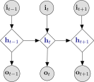
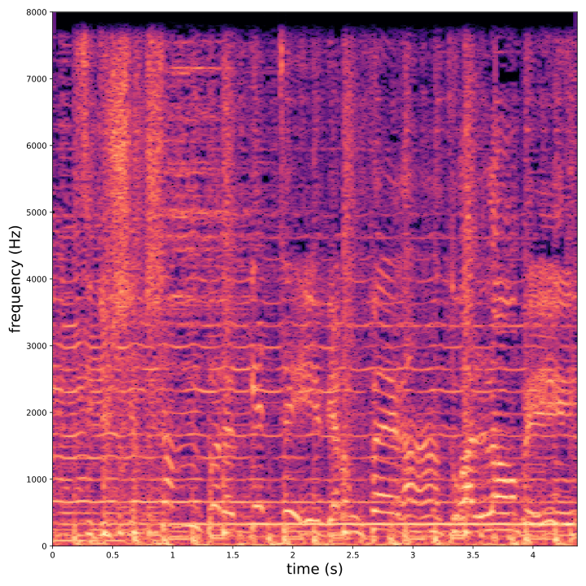
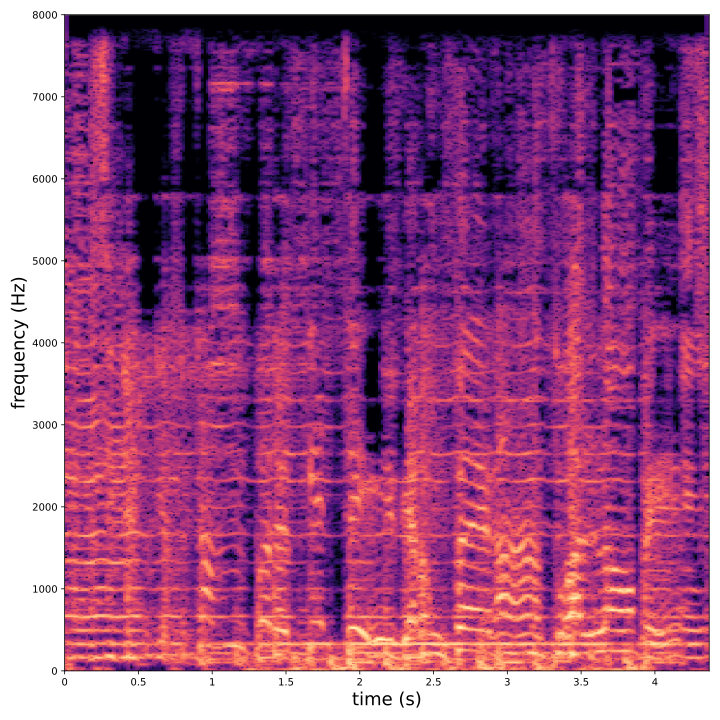
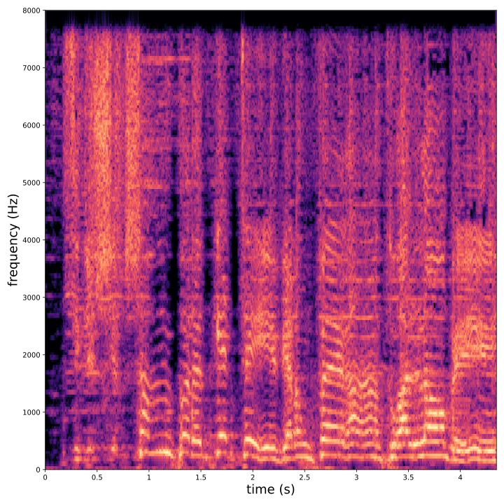
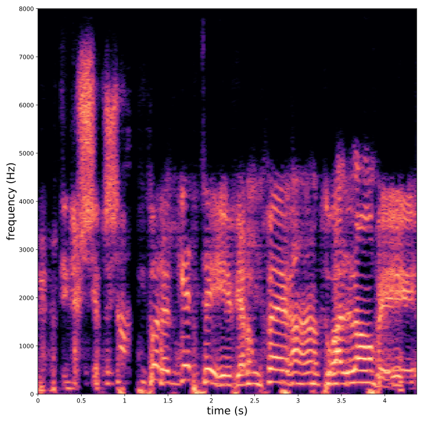
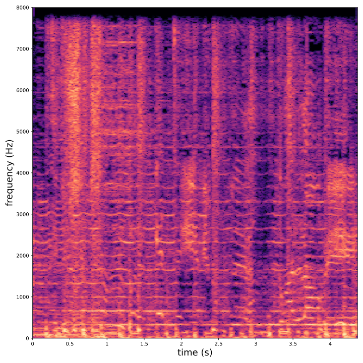
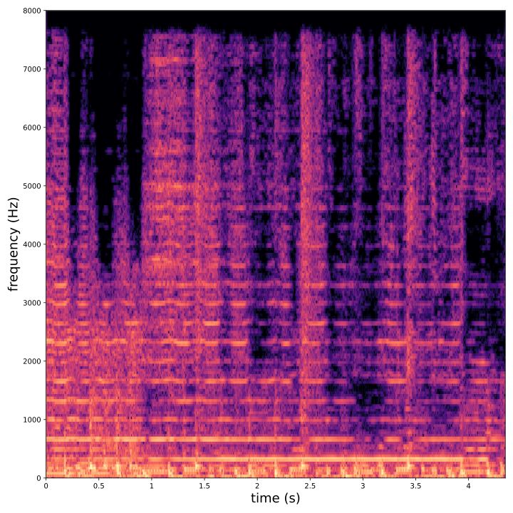
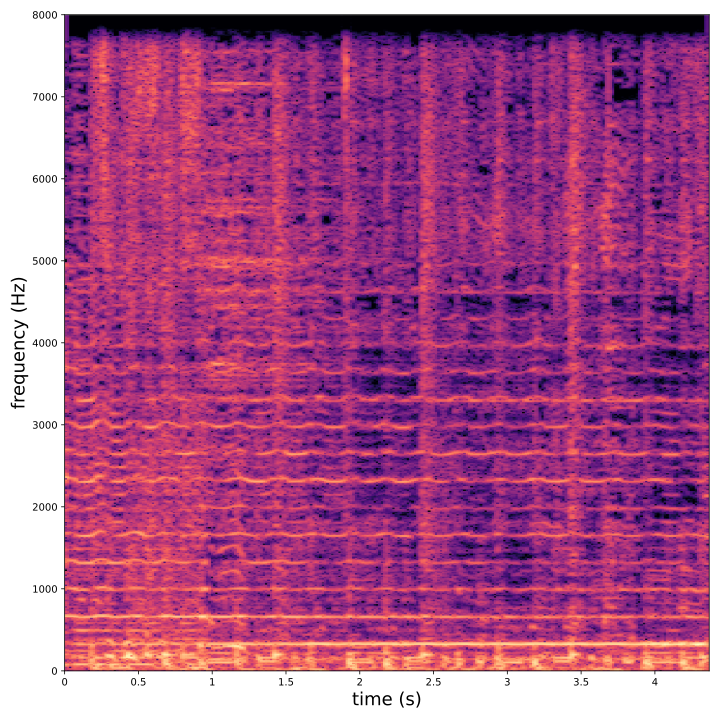

class: center, middle, title-slide count: false <br> # Deep Generative Modeling of Sequential Data with Dynamical Variational Autoencoders .bold[Simon Leglaive<sup>.small[1]</sup>, $\hspace{.2cm}$ Xavier Alameda-Pineda<sup>.small[2]</sup>, $\hspace{.2cm}$ Laurent Girin<sup>.small[3]</sup>] <br/> <br/> .small[<sup>1</sup> CentraleSupélec, IETR $\qquad$ <sup>2</sup> Inria, Univ. Grenoble Alpes, CNRS, LJK $\qquad$ <sup>3</sup> Univ. Grenoble Alpes, CNRS, Grenoble-INP, GIPSA-lab] <br/> .small[ Tutorial at IEEE International Conference on Acoustics Speech and Signal Processing (ICASSP) Virtually in Toronto, Canada Monday, June 7, 2021 ] <!--- https://katex.org/docs/supported.html#macros ---> $$ \global\def\myx#1{{\color{green}\mathbf{x}\_{#1}}} $$ $$ \global\def\mys#1{{\color{green}\mathbf{s}\_{#1}}} $$ $$ \global\def\myz#1{{\color{brown}\mathbf{z}\_{#1}}} $$ $$ \global\def\myhnmf#1{{\color{brown}\mathbf{h}\_{#1}}} $$ $$ \global\def\myztilde#1{{\color{brown}\tilde{\mathbf{z}}\_{#1}}} $$ $$ \global\def\myu#1{\mathbf{u}\_{#1}} $$ $$ \global\def\mya#1{\mathbf{a}\_{#1}} $$ $$ \global\def\myv#1{\mathbf{v}\_{#1}} $$ $$ \global\def\mythetaz{\theta\_\myz{}} $$ $$ \global\def\mythetax{\theta\_\myx{}} $$ $$ \global\def\mythetas{\theta\_\mys{}} $$ $$ \global\def\mythetaa{\theta\_\mya{}} $$ $$ \global\def\bs#1{{\boldsymbol{#1}}} $$ $$ \global\def\diag{\text{diag}} $$ $$ \global\def\mbf{\mathbf} $$ $$ \global\def\myh#1{{\color{purple}\mbf{h}\_{#1}}} $$ $$ \global\def\myhfw#1{{\color{purple}\overrightarrow{\mbf{h}}\_{#1}}} $$ $$ \global\def\myhbw#1{{\color{purple}\overleftarrow{\mbf{h}}\_{#1}}} $$ $$ \global\def\myg#1{{\color{purple}\mbf{g}\_{#1}}} $$ $$ \global\def\mygfw#1{{\color{purple}\overrightarrow{\mbf{g}}\_{#1}}} $$ $$ \global\def\mygbw#1{{\color{purple}\overleftarrow{\mbf{g}}\_{#1}}} $$ --- class: middle count: false ## The speakers .grid[ .kol-1-3[ .center.width-53[<br/>[.bold[Simon Leglaive]](https://sleglaive.github.io/)<br/>Assistant Professor<br/>CentraleSupélec, IETR] ] .kol-1-3[ .center.width-80[[.bold[Xavier Alameda-Pineda]](http://xavirema.eu/)<br/>Research Scientist<br/>Inria, Univ. Grenoble Alpes] ] .kol-1-3[ .center.width-62[<br/>[.bold[Laurent Girin]](http://www.gipsa-lab.grenoble-inp.fr/~laurent.girin/)<br/>Full Professor<br/>Univ. Grenoble Alpes<br/>Grenoble-INP, GIPSA-lab] ] ] --- class: middle count: false ## Ressources This tutorial is mainly built from the overview paper: .center[[Dynamical variational autoencoders: A comprehensive review](https://arxiv.org/pdf/2008.12595.pdf), arXiv preprint, 2020,] written with our colleagues: .grid[ .kol-1-3[ .center.width-40[<br/> .bold[Xiaoyu Bie]<br/>Ph.D. Student<br/>Inria, Univ. Grenoble Alpes] ] .kol-1-3[ .center.width-30[<br/> .bold[Julien Diard]<br/>Research Scientist<br/>Univ. Grenoble Alpes<br/>CNRS, LPNC] ] .kol-1-3[ .center.width-30[<br/> .bold[Thomas Hueber]<br/>Research Scientist<br/>Univ. Grenoble Alpes<br/>CNRS, GIPSA-lab] ] ] --- .center[ Ressources (overview paper, slides, code and Google Colab notebook) are available at <br> [http://dynamicalvae.github.io](http://dynamicalvae.github.io) ] --- class: middle, title-slide count: false .center[ # Organization ] .big-vspace[ ] - Part 1: Introduction and background - Part 2: Dynamical VAEs - Part 3: Dynamical VAEs (continued) - Part 4: Applications of DVAEs in audio and speech processing - Part 5: Conclusion/discussion --- class: middle, title-slide count: false .center[ # Part 1 - Introduction and background ] .big-vspace[ ] - **Basics of unsupervised representation learning and deep generative models** - Objective of the tutorial: Present and discuss the DVAE class of models - Technical background: The Variational AutoEncoder - Limitations of the VAE for modeling correlated data sequences --- class: middle ## Supervised learning A great number of successful practical applications of machine and deep learning use **supervised learning** methods. .grid[ .kol-2-3[ <div style="text-align:center;margin-bottom:30px"> <iframe width="650" height="350" src="https://www.youtube.com/embed/qWl9idsCuLQ?start=10&mute=1&loop=1&autoplay=1" frameborder="0" allow="autoplay; encrypted-media" style="max-width:100%" allowfullscreen=""></iframe> </div> .caption[ .small[Zhao et al., [ICNet for real-time semantic segmentation on high-resolution images](https://arxiv.org/pdf/1704.08545.pdf), ECCV 2018 ]] ] .kol-1-3[ .small[ The Cityscapes dataset for semantic segmentation of urban images contains **5k images** with high quality pixel-level annotations. "Annotation and quality control required more than **1.5 h on average for a single image**" (Cordts et al., 2016). More than 300 days of annotation! ] ] ] .credit[M. Cordts et al., [The Cityscapes dataset for semantic urban scene understanding](https://www.cityscapes-dataset.com/wordpress/wp-content/papercite-data/pdf/cordts2016cityscapes.pdf), IEEE CVPR 2016] --- class: middle ## Unsupervised learning We need **unsupervised** methods that can learn to unveil the **underlying (hidden) structure** of the data without requiring ground-truth labels. .center.width-70[] .small.caption[ Component-by-component scene generation with GENESIS, a generative model of 3D scenes capable of both decomposing and generating scenes by capturing relationships between scene components] .credit[Image credits: Engelcke et al., [GENESIS: Generative scene inference and sampling with object-centric latent representations](https://arxiv.org/pdf/1907.13052.pdf), ICLR 2020.] **Semi-supervised methods** are also of great interest. ??? - GENESIS pursues a consistent strategy for scene generation: Step one generates the floor and the sky, defining the layout of the scene. Steps two to four generate individual foreground objects. Some of these slots remain empty if less than three objects are present in the scene. The final three steps generate the walls in the background. - Unsupervised models can also be used for **semi-supervised learning**, where the goal is to exploit both a **small-scale labeled** dataset and a **large-scale unlabeled** dataset. The unlabeled data are used to learn a representation that makes the supervised task simpler. The resulting semi-supervised model performs typically better than a supervised model trained on the small labeled dataset. --- class: middle ## Generative modeling .small-vspace.center.width-50[] We have to tune the parameters $\theta$ of the **model distribution** $p\_\theta(\mathbf{x})$ so that it is as close as possible to the **true data distribution** $p^\star(\mathbf{x})$, according to some measure of fit. For instance, minimizing the Kullback-Leibler (KL) divergence $D\_{\text{KL}}\left( p^\star(\mathbf{x}) \parallel p\_\theta(\mathbf{x}) \right)$ is equivalent to maximum likelihood estimation of $\theta$. --- class: middle ## 1-dimensional toy example - We define the true data distribution $p^\star(x)$ as a Gaussian distribution with known mean and variance, but of course usually we do not know this distribution. - We assume a Gaussian model distribution $p\_\theta(x) = \mathcal{N}(x; \mu, \sigma^2) $ where $\theta = \\{ \mu, \sigma^2 \\}$. - The parameters $\theta$ are estimated by minimizing .small[(a Monte Carlo estimate of)] $D\_{\text{KL}}\left( p^\star(x) \parallel p\_\theta(x) \right)$, i.e. by maximum likelihood. .center.width-50[] --- class: middle ## $10^6$-dimensional example .vspace[ ] <div style="text-align:center;margin-bottom:30px"> <iframe width="700" height="400" src="https://www.youtube.com/embed/6E1_dgYlifc?autoplay=1" frameborder="0" allow="autoplay; encrypted-media" style="max-width:100%" allowfullscreen=""></iframe> </div> .credit[T. Karras et al., [Analyzing and improving the image quality of StyleGAN](https://arxiv.org/abs/1912.04958), CVPR 2020.] --- class: middle ## Deep generative models (DGM) - The model distribution $p\_\theta(\mathbf{x})$ is somehow defined by means of a neural network. - Two seminal models introduced in 2014: Variational AutoEncoder (VAE) .small[(Kingma and Welling, 2014; Rezende et. al., 2014)] and Generative Adversarial Network (GAN) .small[(Goodfellow et al., 2014)]. - DGMs contain **hundreds of thousands of parameters**, trained in a scalable way using **large datasets of unlabeled high-dimensional data**. .center.width-60[] .credit[ I. Goodfellow et al., [Generative adversarial networks](https://arxiv.org/abs/1406.2661), NeurIPS 2014. <br> D.P. Kingma and M. Welling, [Auto-encoding variational Bayes](https://arxiv.org/pdf/1312.6114.pdf), ICLR 2014. <br> D.J. Rezende et al., [Stochastic backpropagation and approximate inference in deep generative models](https://arxiv.org/pdf/1401.4082.pdf), ICML 2014. Image credit: [Ian Goodfellow, January 15, 2019](https://twitter.com/goodfellow_ian/status/1084973596236144640?ref_src=twsrc%5Etfw) ] --- class: middle ## Several flavors of DGMs **Autoregressive DGMs** define the model distribution recursively, using the chain rule: $$ p\_\theta(\mathbf{x}) = p(x\_1) \prod\_{i=2}^D p\_\theta(x\_i \mid x\_{1:i-1}). $$ .vspace.center.width-50[] .credit[ A. van den Oord et al., [WaveNet: A generative model for raw audio](https://arxiv.org/pdf/1609.03499.pdf), arXiv preprint, 2016. Image credits: https://deepmind.com/blog/article/wavenet-generative-model-raw-audio ] --- class: middle **Flow-based DGMs** transform a simple distribution into a complex one by applying a sequence of $K$ invertible mappings parametrized by $\theta$: $$ \mathbf{x} = f\_K \circ ... \circ f\_1(\mathbf{z}\_0), \qquad \mathbf{z}\_0 \sim p_0(\mathbf{z}\_0). $$ .center.width-70[] As mappings are invertible, we can express $p\_\theta(\mathbf{x})$ analytically from the initial density $p_0(\mathbf{z}\_0)$ and the Jacobian of the inverse transforms. <!--- $$ p\_k(\mathbf{z}\_k) = p\_{k-1}(f\_{k}^{-1}(\mathbf{z}\_{k})) \left| \det \frac{d f\_k^{-1}}{d\mathbf{z}\_k} \right|, \qquad k \in \\{1,...,K\\}. $$ ---> <!--- $$ \ln p(\mathbf{x}; \theta) = \ln p\_0(\mathbf{z}\_0) - \sum\_{f=1}^K \ln \left\vert \det \frac{d f\_k}{d\mathbf{z}\_{k-1}} \right\vert. $$ ---> .credit[Image credits: D. Rezende et al., [Variational inference with normalizing flows](https://arxiv.org/pdf/1505.05770.pdf), ICML 2015.] --- class: middle **Latent-variable-based DGMs** define the model distribution as a marginal distribution involving a low-dimensional latent random vector: $$ p\_\theta(\mathbf{x}) = \int p\_\theta(\mathbf{x} | \mathbf{z}) p(\mathbf{z}) d\mathbf{z}. $$ .center.width-50[] GANs and VAEs are two examples of latent-variable-based DGM, but $p\_\theta(\mathbf{x} | \mathbf{z} )$ is only defined analytically for VAEs. --- class: middle ## Sequential data - Many works on deep generative modeling with continuous latent variables have considered static data (e.g. images). But a lot of data are naturally **sequential/temporal** (e.g. videos, music, speech, text). - Text processing is a bit particular: A text is a sequence of discrete data and its processing involves Natural Language Processing (NLP) techniques. DGMs have been considered for NLP but the vast majority of models consider **a single latent vector for a whole text sequence**, as opposed to a sequence of latent vectors. - In this tutorial, we will focus on continuous-valued signals (speech, audio, videos, sensor-captured physical signals, etc.), for which we may be interested in learning the **temporal dependencies** between the data (observed and latent) **at different time frames**. **So we will consider a sequence of latent vectors associated with a sequence of observations.** --- class: middle, title-slide count: false .center[ # Part 1 - Introduction and background ] .big-vspace[ ] - Basics of unsupervised representation learning and deep generative models - **Objective of the tutorial: Present and discuss the DVAE class of models** - Technical background: The Variational AutoEncoder - Limitations of the VAE for modeling correlated data sequences --- class: middle Several papers have proposed temporal extensions of VAEs using recurrent neural networks (RNNs). Among many others, we can cite: <style type="text/css"> .tg {border-collapse:collapse;border-spacing:0;} .tg td{border-color:black;border-style:solid;border-width:1px;font-family:Arial, sans-serif;font-size:14px; overflow:hidden;padding:10px 5px;word-break:normal;} .tg th{border-color:black;border-style:solid;border-width:1px;font-family:Arial, sans-serif;font-size:14px; font-weight:normal;overflow:hidden;padding:10px 5px;word-break:normal;} .tg .tg-6sy5{color:#354046;font-family:"Lucida Sans Unicode", "Lucida Grande", sans-serif !important;;font-size:16px; text-align:left;vertical-align:top} .tg .tg-z3ar{color:#354046;font-family:"Lucida Sans Unicode", "Lucida Grande", sans-serif !important;;font-size:16px; text-align:left;vertical-align:middle} .tg .tg-8zch{background-color:#FCFCFC;color:#354046;font-family:"Lucida Sans Unicode", "Lucida Grande", sans-serif !important;; font-size:16px;text-align:left;vertical-align:top} .tg .tg-szbj{background-color:#FCFCFC;color:#354046;font-family:"Lucida Sans Unicode", "Lucida Grande", sans-serif !important;; font-size:16px;text-align:left;vertical-align:middle} </style> <table class="tg"> <thead> <tr> <th class="tg-8zch">STORN</th> <th class="tg-szbj">J. Bayer and C. Osendorfer, <a href="https://arxiv.org/pdf/1411.7610.pdf"><span style="text-decoration:none;color:blue">Learning Stochastic Recurrent Networks</span></a>, arXiv:1411.7610, 2014</th> </tr> </thead> <tbody> <tr> <td class="tg-6sy5">VRNN</td> <td class="tg-z3ar">J. Chung et al., <a href="https://papers.nips.cc/paper/5653-a-recurrent-latent-variable-model-for-sequential-data.pdf"><span style="text-decoration:none;color:blue">A recurrent latent variable model for sequential data</span></a>, NeurIPS 2015</td> </tr> <tr> <td class="tg-8zch">SRNN</td> <td class="tg-szbj">M. Fraccaro et al., <a href="https://papers.nips.cc/paper/6039-sequential-neural-models-with-stochastic-layers.pdf"><span style="text-decoration:none;color:blue">Sequential neural models with stochastic layers</span></a>, NeurIPS 2016</td> </tr> <tr> <td class="tg-6sy5">DMM</td> <td class="tg-z3ar">R. Krishnan et al., <a href="http://arxiv.org/pdf/1609.09869.pdf"><span style="text-decoration:none;color:blue">Structured inference networks for nonlinear state space models</span></a>, AAAI 2017</td> </tr> <tr> <td class="tg-6sy5">KVAE</td> <td class="tg-z3ar">M. Fraccaro et al., <a href="https://arxiv.org/pdf/1710.05741.pdf"><span style="text-decoration:none;color:blue">A disentangled recognition and nonlinear dynamics model for unsupervised learning</span></a>, NeurIPS, 2017</td> </tr> <tr> <td class="tg-8zch">DSAE</td> <td class="tg-szbj">Y. Li and S Mandt, <a href="https://arxiv.org/pdf/1803.02991"><span style="text-decoration:none;color:blue">Disentangled sequential autoencoder</span></a>, ICML 2018</td> </tr> <tr> <td class="tg-6sy5">RVAE</td> <td class="tg-z3ar">S. Leglaive et al., <a href="https://hal.archives-ouvertes.fr/hal-02329000/document"><span style="text-decoration:none;color:blue">A recurrent variational autoencoder for speech enhancement</span></a>, IEEE ICASSP 2020</td> </tr> </tbody> </table> --- class: middle The general idea is to combine dynamical models, for modeling the **dynamics of sequential data**, with VAEs, for modeling the **latent factors of data variations**, The goal is to develop models that are more expressive than both classical dynamical probabilistic graphical models (such as state-space models) and standard recurrent neural networks (including gated extensions). --- class: middle The objectives of this tutorial are: - To discuss representative temporal extensions of VAEs available in the (machine learning) literature, within a unified framework in terms of notations and structure of presentation; - To introduce a class of models that we call **Dynamical Variational Autoencoders** (DVAEs), and that encompasses the above-mentioned models into a general methodology; - To show some applications of DVAEs in audio and speech processing. --- class: middle, title-slide count: false .center[ # Part 1 - Introduction and background ] .big-vspace[ ] - Basics of unsupervised representation learning and deep generative models - Objective of the tutorial: Present and discuss the DVAE class of models - **Technical background: The Variational AutoEncoder** - Limitations of the VAE for modeling correlated data sequences --- class: middle, title-slide count: false exclude: true .center[ # Variational AutoEncoders ] .big-vspace[ ] - Generative model - Inference model and training - Limitations .credit[ D.P. Kingma and M. Welling, [Auto-encoding variational Bayes](https://arxiv.org/pdf/1312.6114.pdf), ICLR 2014. D.J. Rezende et al., [Stochastic backpropagation and approximate inference in deep generative models](https://arxiv.org/pdf/1401.4082.pdf), ICML 2014. ] --- class: middle, title-slide count: false exclude: true .center[ # Variational AutoEncoders ] .big-vspace[ ] - **Generative model** - Inference model and training - Limitations .credit[ D.P. Kingma and M. Welling, [Auto-encoding variational Bayes](https://arxiv.org/pdf/1312.6114.pdf), ICLR 2014. D.J. Rezende et al., [Stochastic backpropagation and approximate inference in deep generative models](https://arxiv.org/pdf/1401.4082.pdf), ICML 2014. ] --- class: middle ## Generative model Let $\mathbf{x} \in \mathbb{R}^D$ and $\mathbf{z} \in \mathbb{R}^K$ be two random vectors (typically $K \ll D$). The generative model is defined by: $$ p\_\theta(\mathbf{x}) = \int p\_\theta(\mathbf{x} | \mathbf{z}) p(\mathbf{z}) d\mathbf{z}.$$ .grid[ .kol-2-3[ - The **prior** is a standard Gaussian distribution: $$ p(\mathbf{z}) = \mathcal{N}(\mathbf{z}; \mathbf{0}, \mathbf{I}).$$ - The **likelihood** is parametrized with a **generative/decoder neural network**, e.g. $$ p\_\theta(\mathbf{x} | \mathbf{z} ) = \mathcal{N}\left( \mathbf{x}; \boldsymbol{\mu}\_\theta(\mathbf{z}), \diag\left\\{ \mathbf{v}\_\theta(\mathbf{z}) \right\\} \right), $$ where $\theta$ denotes the parameters of the decoder network. ] .kol-1-3[ .right.width-80[] ] ] --- ## Parameters estimation - Direct maximization of the marginal likelihood is intractable due to non-linearities. - For any distribution $q\_\phi(\mathbf{z} | \mathbf{x})$, we have .small[(Neal and Hinton, 1999; Jordan et al. 1999)] $$ \ln p\_\theta(\mathbf{x}) = \mathcal{L}(\mathbf{x}; \phi, \theta) + D\_{\text{KL}}(q\_\phi(\mathbf{z} | \mathbf{x}) \parallel p\_\theta(\mathbf{z} | \mathbf{x})),$$ where $\mathcal{L}(\mathbf{x}; \phi, \theta)$ is the **evidence lower bound** (ELBO), aka **variational lower bound** (VLB), defined by $$ \mathcal{L}(\mathbf{x}; \phi, \theta) = \mathbb{E}\_{q\_\phi(\mathbf{z} | \mathbf{x})} [\ln p\_\theta(\mathbf{x}, \mathbf{z}) - \ln q\_\phi(\mathbf{z} | \mathbf{x})]. $$ .credit[ R.M. Neal and G.E. Hinton, [A view of the EM algorithm that justifies incremental, sparse, and other variants](http://www.cs.toronto.edu/~radford/ftp/emk.pdf), in M. I. Jordan (Ed.), .italic[Learning in graphical models], 1999. <br> M.I. Jordan et al., [An introduction to variational methods for graphical models](https://people.eecs.berkeley.edu/~jordan/papers/variational-intro.pdf), Machine Learning, 1999.] -- count: false .left-column.center[ <hr style="border:1px solid black" width="70%"> </hr> .bold[Problem #1] $$ \underset{\theta}{\max}\, \mathcal{L}(\mathbf{x}; \phi, \theta),$$ where $\mathcal{L}(\mathbf{x}; \phi, \theta) \le \ln p\_\theta(\mathbf{x})$ ] -- count: false .right-column.center[ <hr style="border:1px solid black" width="70%"> </hr> .bold[Problem #2] $$ \underset{\phi}{\max}\, \mathcal{L}(\mathbf{x}; \phi, \theta) $$ $$ \Leftrightarrow \underset{\phi}{\min}\, D\_{\text{KL}}(q\_\phi(\mathbf{z} | \mathbf{x}) \parallel p\_\theta(\mathbf{z} | \mathbf{x}))$$ ] .reset-column[ ] --- class: center, middle To fully define the objective function, we need to specify the **inference model** $q\_\phi(\mathbf{z} | \mathbf{x}) \approx p\_\theta(\mathbf{z} | \mathbf{x})$. --- class: middle, title-slide count: false exclude: true .center[ # Variational AutoEncoders ] .big-vspace[ ] - Generative model - **Inference model and training** - Limitations .credit[ D.P. Kingma and M. Welling, [Auto-encoding variational Bayes](https://arxiv.org/pdf/1312.6114.pdf), ICLR 2014. D.J. Rezende et al., [Stochastic backpropagation and approximate inference in deep generative models](https://arxiv.org/pdf/1401.4082.pdf), ICML 2014. ] --- class: middle ## Inference model The **inference model** (approximate posterior) is typically defined by: $$ q\_\phi(\mathbf{z} | \mathbf{x}) = \mathcal{N}\left( \mathbf{z}; \boldsymbol{\mu}\_\phi(\mathbf{x}), \diag\left\\{ \mathbf{v}\_\phi(\mathbf{x}) \right\\} \right),$$ where the mean and variance vectors are provided by the **encoder** neural network. .vspace.center.width-30[] --- .grid[ .kol-6-10[ ## ELBO The ELBO is now fully defined: $$ \begin{aligned} \mathcal{L}(\mathbf{x}; \phi, \theta) &= \mathbb{E}\_{q\_\phi(\mathbf{z} | \mathbf{x})} [\ln p\_\theta(\mathbf{x}, \mathbf{z}) - \ln q\_\phi(\mathbf{z} | \mathbf{x})] \\\\ &= \underbrace{\mathbb{E}\_{q\_\phi(\mathbf{z} | \mathbf{x})} [\ln p\_\theta(\mathbf{x} | \mathbf{z})]}\_{\text{reconstruction accuracy}} - \underbrace{D\_{\text{KL}}(q\_\phi(\mathbf{z} | \mathbf{x}) \parallel p(\mathbf{z}))}\_{\text{regularization}}. \end{aligned} $$ - prior: $ \hspace{2cm} p(\mathbf{z}) = \mathcal{N}(\mathbf{z}; \mathbf{0}, \mathbf{I})$ - likelihood model: $ \hspace{.45cm} p\_\theta(\mathbf{x} | \mathbf{z} ) = \mathcal{N}\left( \mathbf{x}; \boldsymbol{\mu}\_\theta(\mathbf{z}), \diag\left\\{ \mathbf{v}\_\theta(\mathbf{z}) \right\\} \right)$ - inference model: $ \hspace{.42cm} q\_\phi(\mathbf{z} | \mathbf{x}) = \mathcal{N}\left( \mathbf{z}; \boldsymbol{\mu}\_\phi(\mathbf{x}), \diag\left\\{ \mathbf{v}\_\phi(\mathbf{x}) \right\\} \right)$ ] .kol-3-10[ .center.width-90[] ] ] .small-nvspace[ ] -- count: false The reconstruction accuracy term is approximated with a Monte Carlo estimate: $$\mathbb{E}\_{q\_\phi(\mathbf{z} | \mathbf{x})} [\ln p\_\theta(\mathbf{x} | \mathbf{z})] \approx \frac{1}{R} \sum\_{r=1}^R \ln p\_\theta(\mathbf{x} | \tilde{\mathbf{z}}\_r ), \qquad \text{with} \quad \tilde{\mathbf{z}}\_r \sim q\_\phi(\mathbf{z} | \mathbf{x}). $$ --- .grid[ .kol-6-10[ ## ELBO The ELBO is now fully defined: $$ \begin{aligned} \mathcal{L}(\mathbf{x}; \phi, \theta) &= \mathbb{E}\_{q\_\phi(\mathbf{z} | \mathbf{x})} [\ln p\_\theta(\mathbf{x}, \mathbf{z}) - \ln q\_\phi(\mathbf{z} | \mathbf{x})] \\\\ &= \underbrace{\mathbb{E}\_{q\_\phi(\mathbf{z} | \mathbf{x})} [\ln p\_\theta(\mathbf{x} | \mathbf{z})]}\_{\text{reconstruction accuracy}} - \underbrace{D\_{\text{KL}}(q\_\phi(\mathbf{z} | \mathbf{x}) \parallel p(\mathbf{z}))}\_{\text{regularization}}. \end{aligned} $$ - prior: $ \hspace{2cm} p(\mathbf{z}) = \mathcal{N}(\mathbf{z}; \mathbf{0}, \mathbf{I})$ - likelihood model: $ \hspace{.45cm} p\_\theta(\mathbf{x} | \mathbf{z} ) = \mathcal{N}\left( \mathbf{x}; \boldsymbol{\mu}\_\theta(\mathbf{z}), \diag\left\\{ \mathbf{v}\_\theta(\mathbf{z}) \right\\} \right)$ - inference model: $ \hspace{.42cm} q\_\phi(\mathbf{z} | \mathbf{x}) = \mathcal{N}\left( \mathbf{z}; \boldsymbol{\mu}\_\phi(\mathbf{x}), \diag\left\\{ \mathbf{v}\_\phi(\mathbf{x}) \right\\} \right)$ ] .kol-3-10[ .center.width-90[] ] ] .small-nvspace[ ] The reconstruction accuracy term is approximated with a Monte Carlo estimate, using the so-called **reparametrization trick**, to make the (sampled version of the) ELBO derivable w.r.t. $\phi$: $$\mathbb{E}\_{q\_\phi(\mathbf{z} | \mathbf{x})} [\ln p\_\theta(\mathbf{x} | \mathbf{z})] \approx \frac{1}{R} \sum\_{r=1}^R \ln p\_\theta(\mathbf{x} | \tilde{\mathbf{z}}\_r ), \qquad \begin{cases} \boldsymbol{\epsilon}\_r &\sim \mathcal{N}(\mathbf{0}, \mathbf{I}) \\\\ \tilde{\mathbf{z}}\_r &= \boldsymbol{\mu}\_\phi(\mathbf{x}) + \diag\left\\{ \mathbf{v}\_\phi(\mathbf{x}) \right\\}^{\frac{1}{2}} \boldsymbol{\epsilon}\_r \end{cases}. $$ --- ## Training procedure ** Step 1: Pick an example in the dataset ** $$ \begin{aligned} \mathcal{L}(\mathbf{x}; \phi, \theta) = \ln p\_\theta({\color{brown}\mathbf{x}} | \tilde{\mathbf{z}}) - D\_{\text{KL}}(q\_\phi(\mathbf{z} | {\color{brown}\mathbf{x}}) \parallel {\color{green}p(\mathbf{z})}) \end{aligned} $$ .center.width-80[] --- ## Training procedure ** Step 2: Map through the encoder ** $$ \begin{aligned} \mathcal{L}(\mathbf{x}; \phi, \theta) = \ln p\_\theta({\color{green}\mathbf{x}} | \tilde{\mathbf{z}}) - D\_{\text{KL}}({\color{brown} q\_\phi(\mathbf{z} | } {\color{green}\mathbf{x} } {\color{brown})} \parallel {\color{green}p(\mathbf{z})}) \end{aligned} $$ .center.width-80[] --- ## Training procedure ** Step 3: Sample from the inference model ** $$ \begin{aligned} \mathcal{L}(\mathbf{x}; \phi, \theta) = \ln p\_\theta({\color{green}\mathbf{x}} | {\color{brown}\tilde{\mathbf{z}}}) -{\color{green} D\_{\text{KL}}(q\_\phi(\mathbf{z} | \mathbf{x}) \parallel p(\mathbf{z}))} \end{aligned} $$ .center.width-80[] --- ## Training procedure ** Step 4: Map through the decoder ** $$ \begin{aligned} \mathcal{L}(\mathbf{x}; \phi, \theta) = {\color{green}\ln p\_\theta(\mathbf{x} | \tilde{\mathbf{z}})} -{\color{green} D\_{\text{KL}}(q\_\phi(\mathbf{z} | \mathbf{x}) \parallel p(\mathbf{z}))} \end{aligned} $$ .center.width-80[] --- ## Training procedure ** Step 5: Gradient ascent step on the ELBO ** $$ \begin{aligned} \mathcal{L}(\mathbf{x}; \phi, \theta) = \ln p\_\theta(\mathbf{x} | \tilde{\mathbf{z}}) - D\_{\text{KL}}(q\_\phi(\mathbf{z} | \mathbf{x}) \parallel p(\mathbf{z})) \end{aligned} $$ .center.width-80[] Encoder-decoder shape, which correspond to an inference-generation process. .footnote[In practice, one averages over mini batches before doing the backpropagation.] --- class: middle ## At test time .center.width-100[] - So far, the encoder was only introduced in order to estimate the parameters of the decoder. - We do not need the encoder for generating new samples. - But it is useful if we need to do inference. --- ## Applications of VAEs in audio and speech processing .tiny[(Girin et al., 2019)] - Modeling, transformation and synthesis of speech signals .small[(Blaauw and Bonada, 2016; Hsu et al., 2016; Hsu et al., 2017; K. Akuzawa et al., 2018)] - Music sound synthesis .small[(Esling et al., 2018; Roche et al., 2019)] - Single-channel speech enhancement .small[(Bando et al., 2018; Leglaive et al., 2018; Pariente et al., 2019; Leglaive et al., 2019a; Richter et al., 2020; Leglaive et al., 2020)] - Multi-channel speech enhancement and separation .small[(Sekiguchi et al., 2018; Kameoka et al., 2019; Li et al., 2019; Leglaive et al., 2019b; Sekiguchi et al., 2019; Fontaine et al., 2019)] .grid[ .kol-1-2[] .kol-1-2[] ] .credit[ L. Girin et al., [Notes on the use of variational autoencoders for speech and audio spectrogram modeling](), DAFx, 2019. <br> M. Blaauw and J. Bonada [Modeling and transforming speech using variational autoencoders](), Interspeech, 2016. <br> C.C. Hsu et al., [Voice conversion from non-parallel corpora using variational auto-encoder](), APSIPA, 2016. <br> W.-N. Hsu et al., [Learning latent representations for speech generation and transformation](), Interspeech 2017. <br> K. Akuzawa et al., [Expressive speech synthesis via modeling expressions with variational autoencoder](), Interspeech, 2018. <br> P. Esling et al., [Bridging audio analysis, perception and synthesis with perceptually-regularized variational timbre spaces](), ISMIR, 2018 <br> F. Roche et al., [Autoencoders for music sound modeling: A comparison of linear, shallow, deep, recurrent and variational models](), SMC, 2019 <br> Y. Bando et al., [Statistical speech enhancement based on probabilistic integration of variational autoencoder and non-negative matrix factorization](), IEEE ICASSP, 2018 <br> S. Leglaive et al., [A variance modeling framework based on variational autoencoders for speech enhancement](), IEEE MLSP, 2018 <br> M. Pariente et al., [A statistically principled and computationally efficient approach to speech enhancement using variational autoencoders](https://hal.inria.fr/hal-02116165v2/document), Interspeech, 2019 <br> S. Leglaive et al., [Speech enhancement with variational autoencoders and alpha-stable distributions](), IEEE ICASSP, 2019a <br> J. Richter et al., [Speech enhancement with stochastic temporal convolutional networks](http://www.interspeech2020.org/uploadfile/pdf/Thu-2-11-5.pdf), Interspeech, 2020 <br> S. Leglaive et al., [A recurrent variational autoencoder for speech enhancement](), IEEE ICASSP, 2020 <br> K. Sekiguchi et al., [Bayesian multichannel speech enhancement with a deep speech prior](), APSIPA, 2018 <br> H. Kameoka et al., [Supervised determined source separation with multichannel variational autoencoder](), Neural Computation, 2019 <br> L. Li et al., [Fast MVAE: Joint separation and classification of mixed sources based on multichannel variational autoencoder with auxiliary classifier](), IEEE ICASSP, 2019 <br> S. Leglaive et al., [Semi-supervised multichannel speech enhancement with variational autoencoders and non-negative matrix factorization](), IEEE ICASSP, 2019b <br> K. Sekiguchi et al., [emi-supervised Multichannel Speech Enhancement with a Deep Speech Prior](), IEEE/ACM TASLP, 2019 <br> M. Fontaine et al., [Cauchy multichannel speech enhancement with a deep speech prior](), Eusipco, 2019 ] --- class: middle, title-slide count: false exclude: true .center[ # Variational AutoEncoders ] .big-vspace[ ] - Generative model - Inference model and training - **Limitations** --- class: middle, title-slide count: false .center[ # Part 1 - Introduction and background ] .big-vspace[ ] - Basics of unsupervised representation learning and deep generative models - Objective of the tutorial: Present and discuss the DVAE class of models - Technical background: The Variational AutoEncoder - **Limitations of the VAE for modeling correlated data sequences** --- class: middle, center We are quite familiar with **static** data generated with VAEs. .grid[ .center.kol-1-3[ MNIST images .vspace.center.width-90[] ] .center.kol-2-3[ Face images .center.width-80[] ] ] .left.credit[Right image credits: A. Vahdat and J. Kautz, [NVAE: A deep hierarchical variational autoencoder](https://arxiv.org/pdf/2007.03898.pdf), NeurIPS 2020.] --- class: middle, center What about **sequential** or **temporal** data such as speech signals? --- ## Encoding-decoding of speech with a VAE .grid[ .kol-1-3[ original signal <audio controls src="audio/signal_orig_VAE.wav"></audio> reconstructed signal <audio controls src="audio/signal_recon_VAE_oracle_phase_latent_dim=16.wav"></audio> .small[ - $\mathbf{x}$ is an STFT magnitude vector of dimension $513$ and $\mathbf{z}$ is a latent vector of dimension $16$. - Each couple $(\mathbf{x}, \mathbf{z})$ is processed independently of the other vectors. - Model trained on Wall Street Journal dataset (25 hours). - The original phase STFT spectrogram is used. ] ] .kol-2-3[ .center.width-80[] ] ] .credit[$\hspace{11cm}$Audio file from voiceHome-2 corpus, N. Bertin, E. Camberlein, R. Lebarbenchon, E. Vincent and F. Bimbot, [URL](http://voice-home.gforge.inria.fr/voiceHome-2_corpus.html)] --- ## Generation of speech with a VAE .grid[ .vspace.kol-1-3[ <audio controls src="audio/signal_gen_VAE_griffinlim_latent_dim=16.wav"></audio> .vspace.center[**The lack of temporal modeling is clearly a problem.**] ] .kol-2-3[ .center.width-90[] ] ] .footnote[The STFT phase spectrogram is estimated with the Griffin-Lim algorithm.] .credit[D. Griffin and J.S. Lim, [Signal estimation from modified short-time Fourier transform](), IEEE TASSP, 1984.] --- ## Encoding-decoding of speech with a **dynamical** VAE .grid[ .kol-1-3[ original signal <audio controls src="audio/signal_orig_SRNN.wav"></audio> reconstructed signal <audio controls src="audio/signal_recon_SRNN_oracle_phase_latent_dim=16.wav"></audio> ] .kol-2-3[ .center.width-90[] ] ] .credit[Audio file from voiceHome-2 corpus, N. Bertin, E. Camberlein, R. Lebarbenchon, E. Vincent and F. Bimbot, [URL](http://voice-home.gforge.inria.fr/voiceHome-2_corpus.html)] --- ## Generation of speech with a **dynamical** VAE .grid[ .vspace.kol-1-3[ <audio controls src="audio/signal_gen_SRNN_griffinlim_latent_dim=16.wav"></audio> - Structured as a phoneme sequence - Voiced/unvoiced phonemes - Coarticulation - Silences ] .kol-2-3[ .center.width-90[] ] ] .footnote[The STFT phase spectrogram is estimated with the Griffin-Lim algorithm.] --- class: middle, title-slide count: false <br> <br> .center[ # Part 2 - Dynamical VAEs ] <br> <br> - Modeling sequential data - State-space models .small[(Kalman, 1960)] - Deep Kalman Filter (DKF) .small[(Krishnan et al., 2015)] / Deep Markov Model (DMM) .small[(Krishnan et al., 2017)] - STOchastic Recurrent Network .small[(Bayer and Osendorfer, 2014)] - Variational Recurrent Neural Network (VRNN) .small[(Chung et al, 2015)] - Other DVAE models - The general class of DVAE models .small[(Girin et al., 2020)] --- class: middle, title-slide count: false <br> <br> .center[ # Part 2 - Dynamical VAEs ] <br> <br> - **Modeling sequential data** - State-space models .small[(Kalman, 1960)] - Deep Kalman Filter (DKF) .small[(Krishnan et al., 2015)] / Deep Markov Model (DMM) .small[(Krishnan et al., 2017)] - STOchastic Recurrent Network .small[(Bayer and Osendorfer, 2014)] - Variational Recurrent Neural Network (VRNN) .small[(Chung et al, 2015)] - Other DVAE models - The general class of DVAE models .small[(Girin et al., 2020)] --- ## Modeling sequential data We are now interested in modeling (the generation of) **sequential data**: - **Observed** sequence $\myx{1:T} = \\{\myx{t} \in \mathbb{R}^D\\}_{t=1}^T$ $\quad$ (continuous or discrete) - **Latent** sequence $\myz{1:T} = \\{\myz{t} \in \mathbb{R}^L\\}_{t=1}^T$ $\quad$ (continuous) Generative modeling consists in defining the joint distribution: $\quad p\_\theta(\myx{1:T}, \myz{1:T}).$ -- count: false In the so-called **driven mode**, we additionally have: - **Input** sequence $\myu{1:T} = \\{\mathbf{u}\_t \in \mathbb{R}^U\\}_{t=1}^T$ $\quad$ (continuous or discrete) In control theory, $\myu{1:T}$ and $\myx{1:T}$ are respectively the input and output of a dynamical system. Generative modeling then consists in defining the joint distribution: $\quad p\_\theta(\myx{1:T}, \myz{1:T} | \myu{1:T}).$ -- count: false Models that were originally defined in the driven (resp. undriven) mode can be "reduced" (resp. extended) to the undriven (resp. driven) mode. In the following, to simplify the presentation, **we will focus on the undriven mode**. --- ## Sequence-to-sequence encoding and decoding - In this tutorial, we only consider the case of **sequence-to-sequence** (or many-to-many) encoding and decoding of continuous observed and latent variables: $ \myx{1:T} \leftrightarrows \myz{1:T} $ - Other models propose many-to-one encoding and one-to-many decoding: $ \myx{1:T} \leftrightarrows \myz{} $. This is common practice in Natural Language Processing (with discrete observed variables and continuous latent vector), e.g. .small[(Bowman et al., 2016; Miao et al., 2016; Serban et al., 2016; Yang et al., 2017; Semeniuta et al., 2017; Hu et al., 2017; Zhao et al., 2018; Jang et al., 2019)]. This idea is also related to VAEs designed to model images, where a "sequence" of pixels is encoded into and decoded from a single vector $\myz{}$ .small[(Gulrajani et al., 2016; Chen et al., 2017)]. .credit[ S. R. Bowman et al., [Generating sentences from a continuous space](https://arxiv.org/pdf/1511.06349.pdf), CoNLL 2016. <br> Y. Miao, L. Yu, and P. Blunsom, [Neural variational inference for text processing](http://proceedings.mlr.press/v48/miao16.pdf), ICML 2016. <br> I. V. Serban et al., [Piecewise latent variables for neural variational text processing](https://arxiv.org/pdf/1612.00377.pdf), arXiv:1612.00377, 2016. <br> Z. Yang et al., [Improved variational autoencoders for text modeling using dilated convolutions](http://proceedings.mlr.press/v70/yang17d/yang17d.pdf), ICML 2017. <br> S. Semeniuta, A. Severyn, and E. Barth, [A hybrid convolutional variational autoencoder for text generation](https://arxiv.org/pdf/1702.02390.pdf), arXiv:1702.02390, 2017. <br> Z. Hu et al., [Toward controlled generation of text](http://proceedings.mlr.press/v70/hu17e/hu17e.pdf), ICML 2017. <br> T. Zhao, K. Lee, and M. Eskenazi, [Unsupervised discrete sentence representation learning for interpretable neural dialog generation](https://arxiv.org/pdf/1804.08069.pdf), arXiv:1804.08069, 2018. <br> M. Jang, S. Seo, and P. Kang., [Recurrent neural network-based semantic variational autoencoder for sequence-to-sequence learning](https://www.sciencedirect.com/science/article/pii/S0020025519302786), Information Sciences, 2019. <br> I. Gulrajani et al., [PixelVAE: A latent variable model for natural images](https://arxiv.org/pdf/1611.05013.pdf), arXiv:1611.05013, 2016. <br> X. Chen et al., [Variational lossy autoencoder](https://arxiv.org/pdf/1611.02731.pdf), ICLR, 2017. ] --- class: middle, title-slide count: false <br> <br> .center[ # Part 2 - Dynamical VAEs ] <br> <br> - Modeling sequential data - **State-space models** .small[(Kalman, 1960)] - Deep Kalman Filter (DKF) .small[(Krishnan et al., 2015)] / Deep Markov Model (DMM) .small[(Krishnan et al., 2017)] - STOchastic Recurrent Network .small[(Bayer and Osendorfer, 2014)] - Variational Recurrent Neural Network (VRNN) .small[(Chung et al, 2015)] - Other DVAE models - The general class of DVAE models .small[(Girin et al., 2020)] .credit[R.E. Kalman, [A new approach to linear filtering and prediction problems](https://asmedigitalcollection.asme.org/fluidsengineering/article/82/1/35/397706/A-New-Approach-to-Linear-Filtering-and-Prediction), Transactions of the ASME – Journal of Basic Engineering, 1960.] --- exclude: true class: middle, center ## State-space models .tiny[Kalman, 1960] --- class: middle ## The state-space model family .grid[ .kol-2-3[ The joint distribution writes: $$ p\_\theta(\myx{1:T}, \myz{1:T} ) = \prod\_{t=1}^T \ \underbrace{p\_{\mythetaz}(\myz{t} | \myz{t-1})}\_{\text{transition dist.}} \ \underbrace{p\_{\mythetax}(\myx{t} | \myz{t})}\_{\text{emission dist.}},$$ where $\myz{t}$ is here called the **state variable**, $\theta = \mythetaz \cup \mythetax$ and $p\_{\mythetaz}(\myz{1} | \myz{0} ) = p\_{\mythetaz}(\myz{1})$. ] .kol-1-3[ .width-80[] ] ] This is the family of **state-space models** (SSMs) introduced by Kalman in 1960. Two well-known examples: - Linear-Gaussian SSMs, with a **continuous state** $\myz{t}$. - Hidden Markov models (HMMs), with a discrete state $\myz{t}$. .credit[R.E. Kalman, [A new approach to linear filtering and prediction problems](https://asmedigitalcollection.asme.org/fluidsengineering/article/82/1/35/397706/A-New-Approach-to-Linear-Filtering-and-Prediction), Transactions of the ASME – Journal of Basic Engineering, 1960.] --- class: middle ## Linear-Gaussian SSM In the **linear-Gaussian** SSM, the two conditional distributions are defined by: .grid[ .kol-2-3[ - Transition distribution (aka dynamical model): $$p\_{\mythetaz}(\myz{t} | \myz{t-1} ) = \mathcal{N}\Big(\myz{t}; \boldsymbol{\mu}\_{\mythetaz}(\myz{t-1}), \boldsymbol{\Sigma}\_{\mythetaz}(\myz{t-1})\Big),$$ where $\boldsymbol{\mu}\_{\mythetaz}(\myz{t-1}) = \mathbf{A}\_t\myz{t-1}$ and $\boldsymbol{\Sigma}\_{\mythetaz}(\myz{t-1}) = \mathbf{Q}\_{t}$. - Emission distribution (aka observation model): $$p\_{\mythetax}(\myx{t} | \myz{t} ) = \mathcal{N}\Big(\myx{t}; \boldsymbol{\mu}\_{\mythetax}(\myz{t}), \boldsymbol{\Sigma}\_{\mythetax}(\myz{t})\Big),$$ where $\boldsymbol{\mu}\_{\mythetax}(\myz{t}) = \mathbf{B}\_t\myz{t}$ and $\boldsymbol{\Sigma}\_{\mythetax}(\myz{t})= \mathbf{R}\_{t}$. ] .kol-1-3[ .width-80[] ] ] Here and in the following, we set a **Gaussian model for convenience**, but this is not mandatory. In particular, the observation model is to be adapted to the nature of the data. --- class: middle ## Exact inference with the Kalman filter/smoother - Inference consists in estimating the state vector sequence $\myz{1:T}$ from the observed (noisy) vector sequence $\myx{1:T}$. - The inference is causal if at time $t$, $\myx{1:t}$ is used for estimating $\myz{t}$, and non-causal if $\myx{1:T}$ is used. - For Linear-Gaussian SSM (with Gaussian observation model), there exist an exact causal (resp. non-causal) inference solution, widely known as the Kalman filter (resp. Kalman smoother). - In the causal case, the filtering recursion computes: $$p(\myz{t} | \myx{1:t}) \propto p(\myx{t}|\myz{t}) \int p(\myz{t}|\myz{t-1}) p(\myz{t-1} | \myx{1:t-1}) d\myz{t-1}. $$ $p(\myz{t} | \myx{1:t})$ is Gaussian, and its parameters can be calculated recursively from the parameters at time $t-1$, from the parameters of the generative model, and from $\myx{t}$ (with basic matrix/vector operations). The mean vector is the state estimate. - In the non-causal case, the Kalman smoother requires ''bidirectional'' recursions (very similar to the forward-backward algorithm for HMMs). ??? As a distribution on $\myz{t}$, $\alpha\_t$ is a Gaussian distribution, whose parameters can be computed from those of $\alpha\_{t-1}$, using the so-called **.italic[filtering recursion]**: $$ {\color{orange}\mathbf{V}\_t}^{-1} = \mathbf{B}\_t^\top \mathbf{R}\_t^{-1} \mathbf{B}\_t + (\mathbf{Q}\_t + \mathbf{A}\_t {\color{orange}\mathbf{V}\_{t-1}} \mathbf{A}\_t^\top)^{-1} $$ $$ {\color{orange}\boldsymbol{\mu}\_t} = \mathbf{V}\_t( \mathbf{B}\_t^\top \mathbf{R}\_t^{-1} \myx{t} + (\mathbf{Q}\_t + \mathbf{A}\_t {\color{orange}\mathbf{V}\_{t-1}} \mathbf{A}\_t^\top)^{-1}\mathbf{A}\_t {\color{orange}\boldsymbol{\mu}\_{t-1}} ) $$ The smoothing recursion has a different form, and allows to efficiently compute $p(\myz{t}|\myx{1:T})$, $\forall t$. --- class: middle, center, black-slide .width-60[] "Apollo 11, this is Houston [...] we have a state vector update for you." <br/> .small[[.italic[Transcription of the air-to-ground voice transmission]](https://www.hq.nasa.gov/alsj/a11/a11transcript_tec.html)] .small-vspace[ ] .left.credit[ Image credits: https://history.nasa.gov/alsj/a11/AS11-40-5886.jpg ] --- class: middle, center What if we need to solve a problem that is more complex than sending men / women on the moon? --- class: middle, title-slide count: false <br> <br> .center[ # Part 2 - Dynamical VAEs ] <br> <br> - Modeling sequential data - State-space models .small[(Kalman, 1960)] - **Deep Kalman Filter (DKF)** .small[(Krishnan et al., 2015)] / **Deep Markov Model (DMM)** .small[(Krishnan et al., 2017)] - STOchastic Recurrent Network .small[(Bayer and Osendorfer, 2014)] - Variational Recurrent Neural Network (VRNN) .small[(Chung et al, 2015)] - Other DVAE models - The general class of DVAE models .small[(Girin et al., 2020)] .left.credit[ R. Krishnan, U. Shalit and D. Sontag, [Deep Kalman Filters](http://arxiv.org/pdf/1511.05121v1.pdf), NeurIPS Workshops on Advances in Approximate Bayesian Inference & Black Box Inference, 2015. <br> R. Krishnan, U. Shalit and D. Sontag, [Structured inference networks for nonlinear state space models](http://arxiv.org/pdf/1609.09869.pdf), AAAI 2017. ] --- exclude: true class: middle, center ## Deep Kalman Filter (DKF) / Deep Markov Model (DMM) ## .tiny[(Krishnan et al., 2015)] .tiny[/] .tiny[(Krishnan et al., 2017)] .left.credit[ R. Krishnan, U. Shalit and D. Sontag, [Deep Kalman Filters](http://arxiv.org/pdf/1511.05121v1.pdf), NeurIPS Workshops on Advances in Approximate Bayesian Inference & Black Box Inference, 2015. <br> R. Krishnan, U. Shalit and D. Sontag, [Structured Inference Networks for Nonlinear State Space Models](http://arxiv.org/pdf/1609.09869.pdf), AAAI 2017. ] --- ## DKF/DMM generative model - In DKF/DMM, the joint distribution follows the same factorization as in SSMs: .small-nvspace[ ] .grid[ .kol-2-3[ $$ p\_{\mythetax}(\myx{1:T}, \myz{1:T}) = \prod\_{t=1}^T p\_{\mythetax}(\myx{t} | \myz{t}) p(\myz{t} | \myz{t-1}), $$ but the two conditional distributions are defined by: $$ \begin{aligned} p\_{\mythetaz}(\myz{t} | \myz{t-1} ) &= \mathcal{N}\Big(\myz{t}; \boldsymbol{\mu}\_{\mythetaz}(\myz{t-1}), \diag\left\\{\mbf{v}\_{\mythetaz}(\myz{t-1}) \right\\}\Big), \\\\ p\_{\mythetax}(\myx{t} | \myz{t} ) &= \mathcal{N}\Big(\myx{t}; \boldsymbol{\mu}\_{\mythetax}(\myz{t}), \diag\left\\{\mbf{v}\_{\mythetax}(\myz{t}) \right\\}\Big), \end{aligned} $$ .small-nvspace[ ] ] .kol-1-3[ <br> .center.width-90[] .center.small[DMM generative model] ] ] where **here and in the rest of this presentation**, $\\{\boldsymbol{\mu}\_{\mythetaz}, \mbf{v}\_{\mythetaz}\\}$ and $\\{\boldsymbol{\mu}\_{\mythetax}, \mbf{v}\_{\mythetax}\\}$ denote **non-linear functions** implemented by **feed-forward fully-connected neural networks**. -- count: false - DKF/DMM can be seen as a **VAE** with a **1st-order Markov model on the latent state**. - The posterior $p\_{\theta}(\myz{1:T} | \myx{1:T})$ is intractable due to non-linearities. --- ## DKF/DMM inference model - Using the **chain rule**, the exact posterior distribution factorizes as a product of conditionals: .grid[ .kol-2-3[ $ \qquad p\_{\theta}(\myz{1:T} | \myx{1:T}) = \prod\limits\_{t=1}^{T} p\_{\theta}(\myz{t} | \myz{1:t-1}, \myx{1:T}). $ It can be simplified based on **D-separation** .small[(Geiger et al., 1990; Bishop, 2006)]: $\qquad p\_{\theta}(\myz{1:T} | \myx{1:T}) = \prod\limits\_{t=1}^{T} p\_{\theta}(\myz{t} | \myz{t-1}, \myx{t:T}). $ ] .kol-1-3[ .center.width-90[] .caption[DMM inference model following the exact posterior structure] ] ] - It is reasonable to assume that **a good candidate for the inference model $q\_{\phi}(\myz{1:T} | \myx{1:T}) \approx p\_{\theta}(\myz{1:T} | \myx{1:T})$ would have the same structure of variable dependencies as the exact posterior**. - This principle was followed in .small[(Krishnan et al. 2017)] (at least for one of the several proposed inference models), but not in .small[(Krishnan et al. 2015)]. .credit[ D. Geiger, T. Verma, and J. Pearl. [Identifying independence in Bayesian networks](http://www.cs.technion.ac.il/~dang/journal_papers/geiger1990identifying.pdf), Networks, 1990. <br> C. Bishop, [Pattern Recognition and Machine Learning](), Springer, 2006. ] --- class: middle - **Inference model** proposed in .small[(Krishnan et al. 2017)]: $$ q\_{\phi}(\myz{1:T} | \myx{1:T}) = \prod\_{t=1}^T q\_{\phi}(\myz{t} | \myz{t-1}, \myx{t:T}), $$ where the conditional posterior at time step $t$ is defined by: $$ q\_{\phi}(\myz{t} | \myz{t-1}, \myx{t:T}) = \mathcal{N}\Big(\myz{t}; \bs{\mu}\_\phi(\myz{t-1}, \myx{t:T}), \diag\big\\{\mbf{v}\_\phi(\myz{t-1}, \myx{t:T})\big\\}\Big), $$ and $\\{ \bs{\mu}\_\phi, \mbf{v}\_\phi \\}$ are non-linear functions of the **conditioning variables** $\\{\myz{t-1}, \myx{t:T}\\}$, implemented by **neural networks**. <br/> - The dependency on $\myz{t-1}$ can be handled by a simple feed-foward fully-connected layer, while the sequential dependencies on $\myx{t:T}$ require the use of a **recurrent layer**. --- ## Recurrent neural network (RNN) .grid[ .kol-1-3[ .left[] ] .kol-2-3[ An RNN introduces an **internal recurrent state variable** that accumulates information from the input sequence: - $\mathbf{h}\_t = r(\mathbf{i}\_t, \mathbf{h}\_{t-1})$, and from which we compute the output: - $\mathbf{o}\_t = \sigma(\mathbf{h}\_t)$, where $r$ and $\sigma$ are element-wise non-linear functions. ] ] In the basic RNN introduced by Elman in 1990, both functions where hyperbolic tangents applied to affine transformations: $$\mathbf{h}\_t = \textrm{tanh}(\mathbf{W}\_{ih} \mathbf{i}\_t + \mathbf{W}\_{hh} \mathbf{h}\_{t-1} + \mathbf{b}\_h), \qquad \mathbf{o}\_t = \textrm{tanh}( \mathbf{W}\_{ho} \mathbf{h}\_t + \mathbf{b}\_o ).$$ .credit[ J. L. Elman, [Finding Structure in Time](https://onlinelibrary.wiley.com/doi/epdf/10.1207/s15516709cog1402_1), Cognitive Science, 1990. ] --- ## Recurrent neural network (RNN) In practice $r$ can be implemented by any recurrent unit, e.g. LSTM .small[(Hochreiter and Schmidhuber, 1997)] and GRU .small[(Kyunghyun et al., 2014)]. In the following, for concision and simplicity of presentation, we keep the generic notation $$\mathbf{h}\_t = r(\mathbf{i}\_t, \mathbf{h}\_{t-1})$$ to represent any type of RNN (internal state). .credit[ S. Hochreiter and J. Schmidhuber, [Long short-term memory](https://www.researchgate.net/publication/13853244_Long_Short-term_Memory), Neural Computation, 1997. <br> C. Kyunghyun et al., [Learning phrase representations using RNN encoder-decoder for statistical machine translation](https://www.aclweb.org/anthology/D14-1179.pdf), EMNLP 2014. ] --- ## DKF/DMM inference model parametrization with RNNs The inference model in DMM is defined by: $$ q\_{\phi}(\myz{1:T} | \myx{1:T}) = \prod\_{t=1}^T q\_{\phi}(\myz{t} | \myz{t-1}, \myx{t:T}), $$ where $\qquad q\_{\phi}(\myz{t} | \myz{t-1}, \myx{t:T}) = \mathcal{N}\left(\myz{t}; \bs{\mu}\_\phi\left(\myz{t-1}, \mygbw{t}\right), \diag\left\\{\mbf{v}\_\phi\left(\myz{t-1}, \mygbw{t}\right)\right\\}\right) $. .grid[ .kol-2-3[ - $ \mygbw{t} = r(\myx{t},\mygbw{t+1})$ denotes a **backward RNN** that encodes the **anti-causal** dependencies of $\myz{t}$ on $\myx{t:T}$ at inference time. - **Here and in the rest of this presentation** $\bs{\mu}\_\phi$ and $\mbf{v}\_\phi$ denote non-linear functions implemented by **feed-foward fully-connected neural networks**. They act here as fusion networks combining $\myz{t-1}$ and $\mygbw{t}$. ] .kol-1-3[ .center.width-90[] .caption[DMM inference model] ] ] --- class: middle ## DKF/DMM variational lower bound In the general sequence modeling framework, the VLB of the VAE generalizes to (for one data sequence $\myx{1:T}$): $$ \mathcal{L}(\theta, \phi) = \mathbb{E}\_{q\_{\phi}(\myz{1:T} | \myx{1:T})}\big[\ln p\_{\theta}(\myx{1:T}, \myz{1:T}) - \ln q\_{\phi}(\myz{1:T} | \myx{1:T}) \big]. $$ Plugging the DKF/DMM equations into the above equation, we obtain: $$ \begin{aligned} \hspace{-.5cm} \mathcal{L}(\theta, \phi) =& \sum\_{t=1}^{T} \Bigg( \mathbb{E}\_{q\_{\phi}(\myz{t} | \myx{1:T})} \Big[ \ln \underbrace{p\_{\mythetax{}}( \myx{t} | \myz{t} )}\_{\text{emission model}}\Big] - \mathbb{E}\_{q\_{\phi}(\myz{t-1} | \myx{1:T})} \Big[ D\_{\text{KL}}\Big( \underbrace{q\_{\phi}(\myz{t} | \myz{t-1}, \myx{t:T})}\_{\text{inference model}} \parallel \underbrace{p\_{\mythetaz{}}(\myz{t} | \myz{t-1})}\_{\text{transition model}} \Big) \Big] \Bigg) \end{aligned} $$ - Transition model: $ \hspace{.15cm} p\_{\mythetaz}(\myz{t} | \myz{t-1} ) = \mathcal{N}\Big(\myz{t}; \boldsymbol{\mu}\_{\mythetaz}(\myz{t-1}), \diag\left\\{\mbf{v}\_{\mythetaz}(\myz{t-1}) \right\\}\Big)$ - Emission model: $\hspace{.25cm} p\_{\mythetax}(\myx{t} | \myz{t} ) = \mathcal{N}\Big(\myx{t}; \boldsymbol{\mu}\_{\mythetax}(\myz{t}), \diag\left\\{\mbf{v}\_{\mythetax}(\myz{t}) \right\\}\Big)$ - Inference model: $\hspace{.15cm} q\_{\phi}(\myz{t} | \myz{t-1}, \myx{t:T}) = \mathcal{N}\left(\myz{t}; \bs{\mu}\_\phi\left(\myz{t-1}, \mygbw{t}\right), \diag\left\\{\mbf{v}\_\phi\left(\myz{t-1}, \mygbw{t}\right)\right\\}\right)$ .footnote[We use evidence lower bound (ELBO) and variational lower bound (VLB) interchangeably.] --- $$ \begin{aligned} \hspace{-.5cm} \mathcal{L}(\theta, \phi) =& \sum\_{t=1}^{T} \Bigg( \mathbb{E}\_{q\_{\phi}(\myz{t} | \myx{1:T})} \Big[ \ln \underbrace{p\_{\mythetax{}}( \myx{t} | \myz{t} )}\_{\text{emission model}}\Big] - \mathbb{E}\_{q\_{\phi}(\myz{t-1} | \myx{1:T})} \Big[ D\_{\text{KL}}\Big( \underbrace{q\_{\phi}(\myz{t} | \myz{t-1}, \myx{t:T})}\_{\text{inference model}} \parallel \underbrace{p\_{\mythetaz{}}(\myz{t} | \myz{t-1})}\_{\text{transition model}} \Big) \Big] \Bigg) \end{aligned} $$ - The KL divergence can be computed analytically, but not the two expectations. -- count: false - We do not have an analytical form for $q\_{\phi}(\myz{t} | \myx{1:T})$, we only have one for $q\_{\phi}(\myz{t} | \myz{t-1}, \myx{t:T})$. -- count: false - We have to exploit the chain rule to compute the expectations **sequentially**: $$ \begin{aligned} \mathbb{E}\_{q\_{\phi}(\myz{t} | \myx{1:T})}\big[ f(\myz{t}) \big] &= \mathbb{E}\_{q\_{\phi}(\myz{1:t} | \myx{1:T})} \big[ f(\myz{t}) \big] = \mathbb{E}\_{q\_{\phi}(\myz{1} | \myx{1:T})} \bigg[ \mathbb{E}\_{q\_{\phi}(\myz{2} | \myz{1}, \myx{2:T})} \Big[ \, ... \, \mathbb{E}\_{q\_{\phi}(\myz{t} | \myz{t-1}, \myx{t:T})}\big[ f(\myz{t}) \big] ... \Big] \bigg], \end{aligned} $$ where $f(\myz{t})$ denotes an arbitrary function of $\myz{t}$. -- count: false - Each individual intractable expectation in this "cascade" of expectations can then be approximated with a Monte Carlo estimate, using the reparametrization trick. -- count: false - The resulting objective function is differentiable w.r.t. $\mythetax$, $\mythetaz$ and $\phi$, and can be optimized with (some variant of) stochastic gradient descent. --- ## DKF/DMM training principle **Pick one training data sequence** and **compute the sequence of anti-causal internal states**. <br> <br> .center.width-100[] .footnote[In practice, we usually work with a mini-batch of training data sequences. Initial internal state: $\mygbw{T+1} = \mathbf{0}$. ] --- ## DKF/DMM training principle **Intialize the VLB and $\myztilde{0}$** .center.width-80[] $$ \begin{aligned} \mathcal{L}(\theta, \phi)& = 0 \end{aligned} $$ --- ## DKF/DMM training principle **Iterate for time step $t=1$ to $T$** .center.width-80[] $$ \begin{aligned} \underbrace{\mathcal{L}(\theta, \phi)}\_{\text{accumulated VLB}}& = \mathcal{L}(\theta, \phi) + \underbrace{\hspace{2cm}}\_{\text{reconstruction term}} - \underbrace{D\_{\text{KL}}\left(q\_{\phi}(\myz{t} | \myztilde{t-1}, \myx{t:T}) \parallel p\_{\mythetaz{}}(\myz{t} | \myztilde{t-1}) \right)}\_{\text{regularization term}} \end{aligned} $$ .footnote[The figure does not exactly correspond to the network architecture in the original papers .small[(Krishnan et al., 2015, 2017)], but the principle is the same.] --- ## DKF/DMM training principle **Iterate for time step $t=1$ to $T$** .center.width-80[] $$ \begin{aligned} \underbrace{\mathcal{L}(\theta, \phi)}\_{\text{accumulated VLB}}& = \mathcal{L}(\theta, \phi) + \underbrace{\hspace{2cm}}\_{\text{reconstruction term}} - \underbrace{D\_{\text{KL}}\left(q\_{\phi}(\myz{t} | \myztilde{t-1}, \myx{t:T}) \parallel p\_{\mythetaz{}}(\myz{t} | \myztilde{t-1}) \right)}\_{\text{regularization term}} \end{aligned} $$ .footnote[The figure does not exactly correspond to the network architecture in the original papers .small[(Krishnan et al., 2015, 2017)], but the principle is the same.] --- ## DKF/DMM training principle **Iterate for time step $t=1$ to $T$** .center.width-80[] $$ \begin{aligned} \underbrace{\mathcal{L}(\theta, \phi)}\_{\text{accumulated VLB}}& = \mathcal{L}(\theta, \phi) + \underbrace{\ln p\_{\mythetax{}}( \myx{t} | \myztilde{t} )}\_{\text{reconstruction term}} - \underbrace{D\_{\text{KL}}\left(q\_{\phi}(\myz{t} | \myztilde{t-1}, \myx{t:T}) \parallel p\_{\mythetaz{}}(\myz{t} | \myztilde{t-1}) \right)}\_{\text{regularization term}} \end{aligned} $$ .footnote[The figure does not exactly correspond to the network architecture in the original papers .small[(Krishnan et al., 2015, 2017)], but the principle is the same.] --- ## DKF/DMM training principle **Update the model parameters** with e.g. a step of gradient ascent .center.width-80[] $$ \begin{aligned} \underbrace{\mathcal{L}(\theta, \phi)}\_{\text{accumulated VLB}}& = \mathcal{L}(\theta, \phi) + \underbrace{\ln p\_{\mythetax{}}( \myx{t} | \myztilde{t} )}\_{\text{reconstruction term}} - \underbrace{D\_{\text{KL}}\left(q\_{\phi}(\myz{t} | \myztilde{t-1}, \myx{t:T}) \parallel p\_{\mythetaz{}}(\myz{t} | \myztilde{t-1}) \right)}\_{\text{regularization term}} \end{aligned} $$ .footnote[The figure does not exactly correspond to the network architecture in the original papers .small[(Krishnan et al., 2015, 2017)], but the principle is the same.] --- class: middle ## DKF/DMM conclusion - At generation time, DKF/DMM does not explicitely account for long-term dependencies between the latent and observed variables (no RNN in the decoder). There is only a first-order Markov model on $\myz{t}$. - At inference time, DMM does account for long-term dependencies on future observations, using an RNN. Let us see now another example of model with other types of temporal dependencies: STORN. --- class: middle, title-slide count: false <br> <br> .center[ # Part 2 - Dynamical VAEs ] <br> <br> - Modeling sequential data - State-space models .small[(Kalman, 1960)] - Deep Kalman Filter (DKF) .small[(Krishnan et al., 2015)] / Deep Markov Model (DMM) .small[(Krishnan et al., 2017)] - **STOchastic Recurrent Network** .small[(Bayer and Osendorfer, 2014)] - Variational Recurrent Neural Network (VRNN) .small[(Chung et al, 2015)] - Other DVAE models - The general class of DVAE models .small[(Girin et al., 2020)] .credit[ J. Bayer and C. Osendorfer, [Learning stochastic recurrent networks](https://arxiv.org/pdf/1411.7610.pdf), arXiv:1411.7610, 2014. ] --- exclude: true class: middle, center ## STOchastic Recurrent Network .tiny[(Bayer and Osendorfer, 2014)] .left.credit[ J. Bayer and C. Osendorfer, [Learning stochastic recurrent networks](https://arxiv.org/pdf/1411.7610.pdf), arXiv preprint arXiv:1411.7610, 2014. ] --- ## STORN generative model .grid[ .kol-2-3[ In STORN, $$ p\_{\mythetax}(\myx{1:T}, \myz{1:T}) = \prod\_{t=1}^T p(\myz{t}) p\_{\mythetax}(\myx{t} | \myx{1:t-1},\myz{1:t}) $$ ] .kol-1-3[ .center.width-80[] .caption[STORN generative model] ] ] ??? Bien insister sur les deux formes, compactes et développées. --- count: false ## STORN generative model .grid[ .kol-2-3[ In STORN, $$ p\_{\mythetax}(\myx{1:T}, \myz{1:T}) = \prod\_{t=1}^T p(\myz{t}) p\_{\mythetax}(\myx{t} | \myx{1:t-1},\myz{1:t}) $$ and the two distributions are defined by: $$ \begin{aligned} p(\myz{t}) &= \mathcal{N}(\myz{t};\mathbf{0},\mathbf{I}), \\\\ p\_{\mythetax}(\myx{t} | \myx{1:t-1},\myz{1:t}) &= \mathcal{N}\big(\myx{t};\boldsymbol{\mu}\_{\mythetax}(\myh{t}),\text{diag}\big\\{\mathbf{v}\_{\mythetax}(\myh{t})\big\\}\big), \end{aligned} $$ where $ \myh{t} = r([\myx{t-1}, \myz{t}], \myh{t-1}) $ denotes an RNN that encodes the **causal dependencies** of $\myx{t}$ on $\myx{1:t-1}$ and $\myz{1:t}$. ] .kol-1-3[ .center.width-80[] .center.width-80[] .caption[STORN generative model: compact (top) and developped (bottom) forms.] ] ] ??? Bien insister sur les deux formes, compactes et développées. --- .grid[ .kol-2-3[ ## STORN inference model - STORN inference model is chosen as: $$ q\_{\phi}(\myz{1:T} | \myx{1:T}) = \prod\_{t=1}^T q\_{\phi}(\myz{t} | \myx{1:t}), $$ where $ q\_{\phi}(\myz{t} | \myx{1:t}) = \mathcal{N}\left(\myz{t}; \bs{\mu}\_\phi\left(\myg{t}\right), \diag\left\\{\mbf{v}\_\phi\left(\myg{t}\right)\right\\}\right)$, and $\myg{t} = r(\myx{t}, \myg{t-1})$ denotes an RNN that encodes the **causal dependencies** of $\myz{t}$ on $\myx{1:t}$ at inference time. - This inference model does not follow the structure of the exact posterior, given by: $$ p\_{\theta}(\myz{1:T} | \myx{1:T}) = \prod\_{t=1}^T p\_{\theta}(\myz{t} | \myz{1:t-1}, \myx{1:T}).$$ The dependencies of $\myz{t}$ on $\myz{1:t-1}$ and $\myx{t+1:T}$ are missing. ] .kol-1-3[ .center.width-80[] .center.width-80[] .caption[STORN inference model. Yellow arrows indicate dependencies that are missing to be compliant with the exact posterior structure.] ] ] --- class: middle ## STORN variational lower bound For one data sequence $\myx{1:T}$, the VLB is given by: $$ \begin{aligned} \hspace{-.5cm} \mathcal{L}(\theta, \phi) =& \sum\_{t=1}^{T} \Bigg( \mathbb{E}\_{q\_{\phi}(\myz{1:t} | \myx{1:T})} \Big[ \ln \underbrace{p\_{\mythetax{}}( \myx{t} | \myx{1:t-1}, \myz{1:t} )}\_{\text{emission model}}\Big] - D\_{\text{KL}}\Big( \underbrace{q\_{\phi}(\myz{t} | \myx{1:t})}\_{\text{inference model}} \parallel \underbrace{p(\myz{t})}\_{\text{prior model}} \Big) \Bigg) \end{aligned} $$ - Prior model: $ \hspace{.15cm} p(\myz{t}) = \mathcal{N}(\myz{t};\mathbf{0},\mathbf{I})$, - Emission model: $\hspace{.2cm} p\_{\mythetax}(\myx{t} | \myx{1:t-1},\myz{1:t}) = \mathcal{N}\big(\myx{t};\boldsymbol{\mu}\_{\mythetax}(\myh{t}),\text{diag}\big\\{\mathbf{v}\_{\mythetax}(\myh{t})\big\\}\big)$, - Inference model: $\hspace{.15cm} q\_{\phi}(\myz{t} | \myx{1:t}) = \mathcal{N}\left(\myz{t}; \bs{\mu}\_\phi\left(\myg{t}\right), \diag\left\\{\mbf{v}\_\phi\left(\myg{t}\right)\right\\}\right)$. $\myh{t}$ and $\myg{t}$ denote RNNs that encode the dependencies of $\myx{t}$ and $\myz{t}$ on the conditioning variables in the emission and inference models, respectively. --- class: middle $$ \begin{aligned} \hspace{-.5cm} \mathcal{L}(\theta, \phi) =& \sum\_{t=1}^{T} \Bigg( \mathbb{E}\_{q\_{\phi}(\myz{1:t} | \myx{1:T})} \Big[ \ln \underbrace{p\_{\mythetax{}}( \myx{t} | \myx{1:t-1}, \myz{1:t} )}\_{\text{emission model}}\Big] - D\_{\text{KL}}\Big( \underbrace{q\_{\phi}(\myz{t} | \myx{1:t})}\_{\text{inference model}} \parallel \underbrace{p(\myz{t})}\_{\text{prior model}} \Big) \Bigg) \end{aligned} $$ - The KL divergence can be computed analytically. - The expectation is intractable and is approximated by a Monte Carlo estimate, using samples drawn from $$q\_{\phi}(\myz{1:t} | \myx{1:T}) = \prod\_{t'=1}^t q\_{\phi}(\myz{t'} | \myx{1:t'}).$$ - As for DKF/DMM, using the reparametrization trick in this sampling leads to an objective function which is differentiable w.r.t. $\theta$ and $\phi$. --- class: middle ## A few remarks about DMM and STORN .small[(paving the way towards the DVAE class)] - DMM has a first-order Markov model on $\myz{t}$ + instantaneous observation model $\myx{t}|\myz{t}$. <span>➔</span> Could be generalized to more complex obs. models (e.g. arbitrary order dependencies). - STORN has an i.i.d model on $\myz{t}$ + obs. model with infinite-order dependency: $\myx{t}|\myz{1:t},\myx{1:t-1}$. <span>➔</span> Could be generalized to a more complex model for $\myz{t}$ (e.g. a Markov model). --- ## Towards the class of DVAE models - In fact, the most "complete" (or richest) model in terms of temporal dependencies is given by applying two times the chain rule .small[(no approximation here)]: $$ \begin{aligned} p\_{\theta}(\myx{1:T}, \myz{1:T}) &= \prod\_{t=1}^{T} p\_{\theta}(\myx{t}, \myz{t} | \myx{1:t-1},\myz{1:t-1}) = \prod\_{t=1}^{T} p\_{\mythetax}(\myx{t} | \myx{1:t-1},\myz{1:t}) p\_{\mythetaz}(\myz{t} | \myx{1:t-1},\myz{1:t-1}). \end{aligned} $$ .center[This is the general form of a (causal) **DVAE generative model**.] -- count: false - **Each temporal (causal) extension of the VAE presented in the literature** .small[(with a sequence pair $(\myz{1:T},\myx{1:T})$)] **can be seen as a particular case of the above general DVAE model**. -- count: false - One may decide to consider additional **conditional independence assumptions**, for example: <style type="text/css"> .tg {border-collapse:collapse;border-spacing:0;} .tg td{border-color:black;border-style:solid;border-width:1px;font-family:Arial, sans-serif;font-size:14px; overflow:hidden;padding:10px 5px;word-break:normal;} .tg th{border-color:black;border-style:solid;border-width:1px;font-family:Arial, sans-serif;font-size:14px; font-weight:normal;overflow:hidden;padding:10px 5px;word-break:normal;} .tg .tg-c3ow{border-color:inherit;font-size:18px;text-align:left;vertical-align:middle} .tg .tg-c3ow1{border-color:inherit;font-size:18px;text-align:center;vertical-align:middle} </style> <table class="tg"> <tbody> <tr> <td class="tg-c3ow1"></td> <td class="tg-c3ow1"> Transition model </td> <td class="tg-c3ow1"> Emission model </td> </tr> <tr> <td class="tg-c3ow">DKF/DMM</td> <td class="tg-c3ow"> $p_{\mythetaz}(\myz{t} | \myx{1:t-1},\myz{1:t-1}) = p_{\mythetaz}(\myz{t} | \myz{t-1})$ </td> <td class="tg-c3ow">$p_{\mythetax}(\myx{t} | \myx{1:t-1},\myz{1:t}) = p_{\mythetax}(\myx{t} | \myz{t})$</td> </tr> <tr> <td class="tg-c3ow">STORN</td> <td class="tg-c3ow"> $p_{\mythetaz}(\myz{t} | \myx{1:t-1},\myz{1:t-1}) = p_{\mythetaz}(\myz{t})$ </td> <td class="tg-c3ow">$p_{\mythetax}(\myx{t} | \myx{1:t-1},\myz{1:t}) $ is not simplified</td> </tr> </tbody> </table> --- class: middle ## The importance of the implementation - In DVAEs, a first-order temporal dependency can be implemented with a basic feed-forward fully-connected neural network, and temporal dependencies of infinite order are implemented with RNNs. - **This can be done in many different ways**, so that different DVAE models differ not only in the temporal dependencies of the variables (i.e. different conditional independence assumptions) but also in the **implementation** of these dependencies with RNNs. - We will come back to the general definition of DVAE models later, let us first illustrate this important point with another major DVAE: VRNN. --- class: middle, title-slide count: false <br> <br> .center[ # Part 2 - Dynamical VAEs ] <br> <br> - Modeling sequential data - State-space models .small[(Kalman, 1960)] - Deep Kalman Filter (DKF) .small[(Krishnan et al., 2015)] / Deep Markov Model (DMM) .small[(Krishnan et al., 2017)] - STOchastic Recurrent Network .small[(Bayer and Osendorfer, 2014)] - **Variational Recurrent Neural Network (VRNN)** .small[(Chung et al, 2015)] - Other DVAE models - The general class of DVAE models .small[(Girin et al., 2020)] .credit[ J. Chung, K. Kastner, L. Dinh, K. Goel, A. Courville and Y. Bengio, [A recurrent latent variable model for sequential data](https://arxiv.org/pdf/1506.02216.pdf). NeurIPS 2015. ] --- exclude: true class: middle, center ## Variational Recurrent Neural Network (VRNN) .tiny[(Chung et al, 2015)] .left.credit[ J. Chung, K. Kastner, L. Dinh, K. Goel, A. Courville and Y. Bengio. [A recurrent latent variable model for sequential data](https://arxiv.org/pdf/1506.02216.pdf). NeurIPS 2015. ] --- .grid[ .kol-76-100[ ## VRNN generative model - In VRNN, $p\_{\theta}(\myx{1:T}, \myz{1:T}) = \prod\limits\_{t=1}^{T} p\_{\mythetax}(\myx{t} | \myx{1:t-1},\myz{1:t}) p\_{\mythetaz}(\myz{t} | \myx{1:t-1},\myz{1:t-1})$, with $ p\_{\mythetaz}(\myz{t} | \myx{1:t-1},\myz{1:t-1}) = \mathcal{N}\big(\myz{t};\boldsymbol{\mu}\_{\mythetaz}(\myh{t}),\text{diag}\\{\mathbf{v}\_{\mythetaz}(\myh{t})\\}\big)$, $p\_{\mythetax}(\myx{t} | \myx{1:t-1},\myz{1:t}) = \mathcal{N}\big(\myx{t};\boldsymbol{\mu}\_{\mythetax}(\myz{t},\myh{t}),\text{diag}\\{\mathbf{v}\_{\mythetax}(\myz{t},\myh{t})\\}\big)$, and $ \myh{t} = r([\myx{t-1}, \myz{t-1}], \myh{t-1}) $ is an RNN that encodes the **causal dependencies of both** $\myz{t}$ **and** $\myx{t}$ on $\myx{1:t-1}$ and $\myz{1:t-1}$. ] .kol-24-100[ .center.width-100[] .center.width-100[] .caption[VRNN generative model] ] ] - The **transition and emission models share the same RNN**. This is an implementation choice, two different RNNs could have been used instead. --- ## VRNN inference model .grid[ .kol-76-100[ - VRNN inference model is chosen as: $q\_{\phi}(\myz{1:T} | \myx{1:T}) = \prod\limits\_{t=1}^T q\_{\phi}(\myz{t} | \myz{1:t-1},\myx{1:t}) $, where $ q\_{\phi}(\myz{t} | \myz{1:t-1},\myx{1:t}) = \mathcal{N}\left(\myz{t}; \bs{\mu}\_\phi\left(\myh{t},\myx{t}\right), \diag\left\\{\mbf{v}\_\phi\left(\myh{t},\myx{t}\right)\right\\}\right)$, and $\myh{t}$ **denotes the same RNN as in the generative model**, which is another arbitrary implementation choice. - This inference model does not follow the structure of the exact posterior: $$p\_{\theta}(\myz{1:T} | \myx{1:T}) = \prod\_{t=1}^T p\_{\theta}(\myz{t} | \myz{1:t-1}, \myx{1:T}).$$ The dependencies of $\myz{t}$ on $\myx{t+1:T}$ are missing. ] .kol-24-100[ .center.width-90[] .center.width-90[] .caption[VRNN inference model.] ] ] --- ## VRNN variational lower bound For one data sequence $\myx{1:T}$, the VLB is given by: $$ \begin{aligned} \hspace{-.5cm} \mathcal{L}(\theta, \phi) =& \sum\_{t=1}^{T} \Bigg( \mathbb{E}\_{q\_{\phi}(\myz{1:t} | \myx{1:T})} \Big[ \ln \underbrace{p\_{\mythetax}( \myx{t} | \myx{1:t-1}, \myz{1:t} )}\_{\text{emission model}}\Big] \\\\ & - \mathbb{E}\_{q\_{\phi}(\myz{1:t-1} | \myx{1:T})} \Big[ D\_{\text{KL}}\Big( \underbrace{q\_{\phi}(\myz{t} | \myz{1:t-1},\myx{1:t})}\_{\text{inference model}} \parallel \underbrace{p\_{\mythetaz}(\myz{t} | \myz{1:t-1}, \myx{1:t-1})}\_{\text{transition model}} \Big) \Big] \Bigg) \end{aligned} $$ Business as usual: - KL divergence can be computed analytically, - intractable expectations are approximated by Monte Carlo estimates, - sampling is done recursively and using the reparameterization trick, - the resulting VLB is differentiable w.r.t. $\theta$ and $\phi$. --- class: middle ## VRNN conclusion - VRNN has the richest / most complex possible variable dependency structure $\leftrightarrow$ There is no simplification of the general DVAE equation. - There are many ways of implementing this structure with RNNs, and VRNN reflects "strong choices," in particular **a unique RNN shared by the two generative modules of the decoder and by the encoder**. - Before going further into the presentation of the general class of DVAE models, let us now present more quickly other temporal extensions of VAEs found in the literature. - We will not detail the VLB for those other models, as its derivation and optimization follows the same principle as before. --- class: middle, title-slide count: false <br> <br> .center[ # Part 2 - Dynamical VAEs ] <br> <br> - Modeling sequential data - State-space models .small[(Kalman, 1960)] - Deep Kalman Filter (DKF) .small[(Krishnan et al., 2015)] / Deep Markov Model (DMM) .small[(Krishnan et al., 2017)] - STOchastic Recurrent Network .small[(Bayer and Osendorfer, 2014)] - Variational Recurrent Neural Network (VRNN) .small[(Chung et al, 2015)] - **Other DVAE models** - The general class of DVAE models .small[(Girin et al., 2020)] --- class: middle, center, title-slide ## Kalman Variational AutoEncoder (KVAE) .tiny[(Fraccaro et al., 2017)] .left.credit[ M. Fraccaro, S. Kamronn, U. Paquet, and O. Winther, [A disentangled recognition and nonlinear dynamics model for unsupervised learning](https://arxiv.org/pdf/1710.05741.pdf). NeurIPS 2017. ] --- class: middle ## KVAE generative model .grid[ .kol-76-100[ Basically, a VAE on top of a Kalman filter: $$ p\_{\theta}(\myx{1:T}, \mya{1:T}, \myz{1:T}) = \prod\_{t=1}^{T} \underbrace{p\_{\mythetax}(\myx{t} | \mya{t})}\_{\text{VAE}} \underbrace{p\_{\theta\_{\mya{}}}(\mya{t} | \myz{t}) p\_{\mythetaz}(\myz{t} | \myz{t-1})}\_{\text{linear-Gaussian SSM}},$$ where - $p\_{\mythetax}(\myx{t} | \mya{t}) = \mathcal{N}\big(\myx{t};\boldsymbol{\mu}\_{\mythetax}(\mya{t}),\text{diag}\\{\mathbf{v}\_{\mythetax}(\mya{t})\\}\big)$; - $p\_{\theta\_{\mya{}}}(\mya{t} | \myz{t}) = \mathcal{N}\big(\mya{t};\boldsymbol{\mu}\_{\theta\_{\mya{}}}(\myz{t}),\text{diag}\\{\mathbf{v}\_{\theta\_{\mya{}}}(\myz{t})\\}\big)$; - $p\_{\mythetaz}(\myz{t} | \myz{t-1}) = \mathcal{N}\big(\myz{t};\boldsymbol{\mu}\_{\mythetaz}(\myz{t-1}),\text{diag}\\{\mathbf{v}\_{\mythetaz}(\myz{t-1})\\}\big) $. ] .kol-24-100[ .center.width-100[] .caption[KVAE generative model] ] ] --- class: middle ## KVAE inference model .grid[ .kol-76-100[ $$ q\_{\phi}(\mya{1:T},\myz{1:T} | \myx{1:T}) = \underbrace{p\_{\theta}(\myz{1:T} | \mya{1:T})}\_{\text{(2)}} \underbrace{\prod\_{t=1}^{T} q\_{\phi}(\mya{t} | \myx{t})}\_{\text{(1)}}.$$ where - $(1)$ is computed with the VAE encoder $q\_{\phi}(\mya{t} | \myx{t}) = \mathcal{N}\big(\mya{t};\boldsymbol{\mu}\_{\phi}(\myx{t}),\text{diag}\\{\mathbf{v}\_{\phi}(\myx{t})\\}\big)$, - $(2)$ is computed with the standard Kalman filter. This inference model follows the form of the exact posterior distribution. ] .kol-24-100[ .center.width-100[] .caption[KVAE inference model] ] ] In KVAE, a "weigthed" Kalman filter is used, i.e. a Kalman filter with a linear combination of dynamical models, with weights computed by a neural network .small[(not detailed here)]. --- exclude: true class: middle, title-slide count: false <br> <br> .center[ # Part 2 - Dynamical VAEs ] <br> <br> - Modeling sequential data - State-space models .small[(Kalman, 1960)] - Deep Kalman Filter (DKF) .small[(Krishnan et al., 2015)] / Deep Markov Model (DMM) .small[(Krishnan et al., 2017)] - STOchastic Recurrent Network .small[(Bayer and Osendorfer, 2014)] - Variational Recurrent Neural Network (VRNN) .small[(Chung et al, 2015)] - Other DVAE models - Kalman Variational AutoEncoder (KVAE) .small[(Fraccaro et al., 2017)] - **Stochastic Recurrent Neural Network (SRNN)** .small[(Fraccaro et al., 2016)] - Recurrent Variational Autoencoder (RVAE) .small[(Leglaive et al., 2020)] - Disentangled Sequential AutoEncoder (DSAE) .small[(Li and Mandt, 2018)] - The general class of DVAE models .small[(Girin et al., 2020)] .credit[ M. Fraccaro, S. K. Sønderby, U. Paquet and O. Winther, [Sequential neural models with stochastic layers](https://arxiv.org/pdf/1605.07571.pdf), NeurIPS 2016. ] --- class: middle, center, title-slide ## Stochastic Recurrent Neural Network (SRNN) .tiny[(Fraccaro et al., 2016)] .left.credit[ M. Fraccaro, S. K. Sønderby, U. Paquet and O. Winther, [Sequential neural models with stochastic layers](https://arxiv.org/pdf/1605.07571.pdf), NeurIPS 2016. ] --- class: middle ## SRNN generative model .grid[ .kol-76-100[ $$p\_{\theta}(\myx{1:T}, \myz{1:T}) = \prod\_{t=1}^{T} p\_{\mythetax}(\myx{t} | \myx{1:t-1},\myz{t}) p\_{\mythetaz}(\myz{t} | \myz{t-1},\myx{1:t-1}),$$ where - $ p\_{\mythetax}(\myx{t} | \myx{1:t-1},\myz{t}) = \mathcal{N}\big(\myx{t};\boldsymbol{\mu}\_{\mythetax}(\myz{t}, \myh{t}),\text{diag}\\{\mathbf{v}\_{\mythetax}(\myz{t}, \myh{t})\\}\big)$ - $ p\_{\mythetaz}(\myz{t} | \myz{t-1},\myx{1:t-1}) = \mathcal{N}\big(\myz{t};\boldsymbol{\mu}\_{\mythetaz}(\myz{t-1},\myh{t}),\text{diag}\\{\mathbf{v}\_{\mythetaz}(\myz{t-1},\myh{t})\\}\big)$ Implemented with a **single RNN** with an internal state $$ \myh{t} = r(\myx{t-1}, \myh{t-1}) $$ shared by $p\_{\mythetax}$ and $p\_{\mythetaz}$ (as in VRNN). ] .kol-24-100[ .center.width-100[] .center.width-100[] .caption[SRNN generative model] ] ] --- class: middle ## SRNN inference model .grid[ .kol-76-100[ $$q\_{\phi}(\myz{1:T} | \myx{1:T}) = \prod\_{t=1}^T q\_{\phi}(\myz{t} | \myz{t-1},\myx{1:T}),$$ where - $ q\_{\phi}(\myz{t} | \myz{t-1}, \myx{1:T}) = \mathcal{N}\big(\myz{t}; \boldsymbol{\mu}\_{\phi}(\myz{t-1},\mygbw{t}), \text{diag}\\{\mathbf{v}\_{\phi}(\myz{t-1},\mygbw{t})\\}\big)$ - $\mygbw{t} = r([\myh{t}, \myx{t}],\mygbw{t+1})$ is a **backward RNN**. - $\myh{t} = r(\myx{t-1}, \myh{t-1})$ is **shared with the generative model**, as in VRNN. <br> This inference model **follows the structure of the exact posterior distribution**. ] .kol-24-100[ .center.width-90[] .center.width-90[] .caption[SRNN inference model.] ] ] --- exclude: true class: middle, title-slide count: false <br> <br> .center[ # Part 2 - Dynamical VAEs ] <br> <br> - Modeling sequential data - State-space models .small[(Kalman, 1960)] - Deep Kalman Filter (DKF) .small[(Krishnan et al., 2015)] / Deep Markov Model (DMM) .small[(Krishnan et al., 2017)] - STOchastic Recurrent Network .small[(Bayer and Osendorfer, 2014)] - Variational Recurrent Neural Network (VRNN) .small[(Chung et al, 2015)] - Other DVAE models - Kalman Variational AutoEncoder (KVAE) .small[(Fraccaro et al., 2017)] - Stochastic Recurrent Neural Network (SRNN) .small[(Fraccaro et al., 2016)] - **Recurrent Variational Autoencoder (RVAE)** .small[(Leglaive et al., 2020)] - Disentangled Sequential AutoEncoder (DSAE) .small[(Li and Mandt, 2018)] - The general class of DVAE models .small[(Girin et al., 2020)] .credit[ S. Leglaive, X. Alameda-Pineda, L. Girin and R. Horaud, [A recurrent variational autoencoder for speech enhancement](https://ieeexplore.ieee.org/document/9053164), IEEE ICASSP 2020. ] --- class: middle, center, title-slide ## Recurrent Variational AutoEncoder (RVAE) .tiny[(Leglaive et al., 2020)] .left.credit[ S. Leglaive, X. Alameda-Pineda, L. Girin and R. Horaud, [A recurrent variational autoencoder for speech enhancement](https://ieeexplore.ieee.org/document/9053164), IEEE ICASSP 2020. ] --- class: middle ## RVAE generative model .grid[ .kol-76-100[ $$p\_{\theta}(\myx{1:T}, \myz{1:T}) = \prod\_{t=1}^{T} p\_{\mythetax}(\myx{t} | \myz{1:t}) p(\myz{t}),$$ where - $ p(\myz{t}) = \mathcal{N}(\myz{t}; \mathbf{0},\mathbf{I})$ - $ p\_{\mythetax}(\myx{t} | \myz{1:t}) = \mathcal{N}(\myx{t}; \boldsymbol{\mu}\_{\mythetaz}(\myh{t}),\text{diag}\\{\mathbf{v}\_{\mythetaz}(\myh{t})\\}) $ - $ \myh{t} = r(\myz{t}, \myh{t-1}) $ is an RNN that encodes the **causal dependency of ** $\myx{t}$ on $\myz{1:t-1}$. ] .kol-24-100[ .center.width-100[] .center.width-100[] .caption[RVAE generative model] ] ] --- class: middle ## RVAE inference model .grid[ .kol-76-100[ $$q\_{\phi}(\myz{1:T} | \myx{1:T}) = \prod\_{t=1}^T q\_{\phi}(\myz{t} | \myz{1:t-1},\myx{t:T}),$$ where - $ q\_{\phi}(\myz{t} | \myz{1:t-1},\myx{t:T}) = \mathcal{N}\big(\myz{t}; \boldsymbol{\mu}\_{\phi}(\mygfw{t},\mygbw{t}), \text{diag}\\{\mathbf{v}\_{\phi}(\mygfw{t},\mygbw{t})\\}\big)$ - $\mygbw{t} = r(\myx{t},\mygbw{t+1})$ - $\mygfw{t} = r(\myz{t-1},\mygfw{t-1})$ <br> This inference model **follows the structure of the exact posterior distribution**. ] .kol-24-100[ .center.width-90[] .center.width-90[] .caption[RVAE inference model.] ] ] --- class: middle ## Non-causal RVAE In .small[(Leglaive et al., 2020)], we also proposed a non-causal version of the RVAE: - .bold[Generative model]: $\qquad p\_{\theta}(\myx{1:T}, \myz{1:T}) = \prod\limits\_{t=1}^{T} p\_{\mythetax}(\myx{t} | \myz{1:T}) p(\myz{t}),$ where $p\_{\mythetax}$ is implemented with a **bidirectional RNN** on $\myz{t}$. - .bold[Inference model]: $\qquad q\_{\phi}(\myz{1:T} | \myx{1:T}) = \prod\limits\_{t=1}^T q\_{\phi}(\myz{t} | \myz{1:t-1},\myx{1:T}),$ implemented with a **forward RNN** on $\myz{t}$ combined with a **bidirectional RNN** on $\myx{t}$. This inference model follows the form of the exact posterior. To our knowledge, this is the first non-causal DVAE generative model found in the literature. --- exclude: true class: middle, title-slide count: false <br> <br> .center[ # Part 2 - Dynamical VAEs ] <br> <br> - Modeling sequential data - State-space models .small[(Kalman, 1960)] - Deep Kalman Filter (DKF) .small[(Krishnan et al., 2015)] / Deep Markov Model (DMM) .small[(Krishnan et al., 2017)] - STOchastic Recurrent Network .small[(Bayer and Osendorfer, 2014)] - Variational Recurrent Neural Network (VRNN) .small[(Chung et al, 2015)] - Other DVAE models - Kalman Variational AutoEncoder (KVAE) .small[(Fraccaro et al., 2017)] - Stochastic Recurrent Neural Network (SRNN) .small[(Fraccaro et al., 2016)] - Recurrent Variational Autoencoder (RVAE) .small[(Leglaive et al., 2020)] - **Disentangled Sequential AutoEncoder (DSAE)** .small[(Li and Mandt, 2018)] - The general class of DVAE models .small[(Girin et al., 2020)] .credit[ Y. Li and S. Mandt, [Disentangled Sequential Autoencoder](https://arxiv.org/pdf/1803.02991.pdf), ICML 2018. ] --- class: middle, center, title-slide ## Disentangled Sequential AutoEncoder (DSAE) .tiny[(Li and Mandt, 2018)] .left.credit[ Y. Li and S. Mandt, [Disentangled Sequential Autoencoder](https://arxiv.org/pdf/1803.02991.pdf), ICML 2018. ] --- class: middle ## DSAE generative model .grid[ .kol-7-10[ State-space-like model (close in spirit to DKF) enriched with a sequence-level variable $\myv{}$, assumed to encode sequence-level signal features .small[(e.g. speaker characteristics in a speech signal utterance)] and that is disentangled from signal dynamics: $$p\_{\theta}(\myx{1:T}, \myz{1:T}, \myv{}) = p\_{\theta\_{\myv{}}}(\myv{}) \prod\_{t=1}^{T} p\_{\mythetax}(\myx{t} | \myz{t}, \myv{}) p\_{\mythetaz}(\myz{t} | \myz{1:t-1}),$$ where - $ p\_{\mythetax}(\myx{t} | \myz{t}, \myv{}) = \mathcal{N}\Big(\myx{t}; \boldsymbol{\mu}\_{\mythetax}(\myz{t}, \myv{}), \diag\left\\{\mbf{v}\_{\mythetax}(\myz{t}, \myv{}) \right\\}\Big) $ - $ p\_{\mythetaz}(\myz{t} | \myz{1:t-1}) = \mathcal{N}\Big(\myz{t}; \boldsymbol{\mu}\_{\mythetaz}(\myh{t}), \diag\left\\{\mbf{v}\_{\mythetaz}(\myh{t}) \right\\}\Big)$ - $\myh{t} = r(\myz{t-1},\myh{t-1})$ - $ p\_{\theta\_{\myv{}}}(\myv{})$ encodes prior information on the sequence-level variable. ] .kol-3-10[ .center.width-100[] .center.width-100[] .caption[DSAE generative model] ] ] ??? $p\_{\mythetaz}$ is implemented with a forward RNN (LSTM) and $p\_{\mythetax}$ is implemented with an MLP. ted with a forward RNN (LSTM) and $p\_{\mythetax}$ is implemented with an MLP. --- class: middle .grid[ .kol-1-2[ ## DSAE inference model .small[("full")] $$q\_\phi(\myz{1:T}, \myv{} | \myx{1:T}) = q\_{\phi\_{\myv{}}}(\myv{} | \myx{1:T}) \prod\_{t=1}^{T} q\_{\phi\_{\myz{}}}(\myz{t} | \myv{}, \myx{1:T}),$$ - $q\_{\phi\_{\myv{}}}$ is implemented with a bidirectional RNN on $\myx{t}$ - $q\_{\phi\_{\myz{}}}$ is implemented with a bidirectional RNN on $\myx{t}$ taking also (the sampled value of) $\myv{}$ as input ] .kol-1-2[ .center.width-100[] ] .kol-7-10[ This inference model does not follow the form of the exact posterior: $p\_\theta(\myz{1:T}, \myv{} | \myx{1:T}) = p\_{\theta}(\myv{} | \myx{1:T}) \prod\limits\_{t=1}^{T} p\_{\theta}(\myz{t} | \myz{1:t-1}, \myv{}, \myx{t:T})$. Some dependencies are missing .small[(yellow arrows on the figure)] and some unrequired dependencies are added .small[(grey arrows)]. ] .kol-3-10[ .center.width-100[] .caption[DSAE inference model] ] ] --- class: middle, center, title-slide ## Other related models in brief --- <br> - Latent Linear Dynamical Systems and Structured VAE (SVAE) .small[(Johnson et al., 2016)] - Black-box deep SSM .small[(Archer et al., 2015; Zhao and Park, 2017)] - Deep Variational Bayesian Filters (DVBF) .small[(Karl et al., 2017)] - Disentangled SSM .small[(Miladinovic et al., 2019)] - Variational Recurrent Autoencoder (VRAE) .small[(Fabius and van Amersfoort, 2014; Babaeizadeh et al., 2018)] - Factorized Hierarchical Variational Autoencoder (FHVAE) .small[(Hsu et al., 2017b)] .credit[ M. J. Johnson et al., [Composing graphical models with neural networks for structured representations and fast inference](), NeurIPS 2016. <br> E. Archer et al., [Black box variational inference for state space models](), arXiv:1511.07367, 2015. <br> Y. Zhao and I. M. Park, [Variational online learning of neural dynamics](), arXiv:1707.09049, 2017. <br> M. Karl et al., [Deep variational Bayes filters: Unsupervised learning of state space models from raw data](), ICLR 2017. <br> D. Miladinovic et al., [Disentangled state space representations](), arXiv:1906.03255, 2019. <br> O. Fabius and J. R. van Amersfoort, [Variational recurrent auto-encoders](), arXiv:1412.6581, 2014. <br> M. Babaeizadeh et al., [Stochastic variational video prediction](), ICLR 2018. <br> W.-N. Hsu, Y. Zhang and J. Glass, [Unsupervised learning of disentangled and interpretable representations from sequential data](), NeurIPS 2017. <br> ] --- <br> - Deep Recurrent Attentive Writer (DRAW) .small[(Gregor et al., 2015)] - Neural Adaptive Sequential Monte Carlo (NASMC) .small[(Gu et al., 2015)] - Recurrent SSM (RSSM) .small[(Hafner et al., 2018)] - Gaussian Process VAE (GP-VAE) .small[(Fortuin et al., 2020)] - Disentangled temporal extensions of GANs (with adversarial training and not variational training) .small[(Mathieu et al., 2016; Villegas et al., 2017; Denton and Birodkar, 2017; Tulyakov et al., 2018; Lee et al., 2018)] Especially successful for separating content and motion in videos. .credit[ K. Gregor et al., [DRAW: A recurrent neural network for image generation](), ICML 2015. <br> S. Gu, Z. Ghahramani and R. E. Turner, [Neural adaptive sequential Monte Carlo](), NeurIPS 2015. <br> D. Hafner et al., [Learning latent dynamics for planning from pixels](), arXiv:1811.04551, 2018. <br> V. Fortuin et al., [GP-VAE: Deep probabilistic time series imputation](), AISTATS 2020. <br> M. F. Mathieu et al., [Disentangling factors of variation in deep representation using adversarial training](), NeurIPS 2016. <br> R. Villegas et al., [Decomposing motion and content for natural video sequence prediction](), ICLR 2017. <br> E. Denton and V. Birodkar, [Unsupervised learning of disentangled representations from video](), NeurIPS 2017. <br> S. Tulyakov et al., [MoCoGan: Decomposing motion and content for video generation](), CVPR 2018. <br> J. Y. Lee et al. [Acoustic modeling using adversarially trained variational recurrent neural network for speech synthesis](), Interspeech 2018. ] --- class: center, middle For more information on related works, please see our review paper .small[(Girin et al., 2020)]. .left.credit[L. Girin, S. Leglaive, X. Bie, J. Diard, T. Hueber and X. Alameda-Pineda, [Dynamical variational autoencoders: A comprehensive review](https://arxiv.org/pdf/2008.12595.pdf), arXiv:2008.12595, 2020.] --- class: middle, title-slide count: false <br> <br> .center[ # Part 2 - Dynamical VAEs ] <br> <br> - Modeling sequential data - State-space models .small[(Kalman, 1960)] - Deep Kalman Filter (DKF) .small[(Krishnan et al., 2015)] / Deep Markov Model (DMM) .small[(Krishnan et al., 2017)] - STOchastic Recurrent Network .small[(Bayer and Osendorfer, 2014)] - Variational Recurrent Neural Network (VRNN) .small[(Chung et al, 2015)] - Other DVAE models - **The general class of DVAE models** .small[(Girin et al., 2020)] .credit[L. Girin, S. Leglaive, X. Bie, J. Diard, T. Hueber and X. Alameda-Pineda, [Dynamical variational autoencoders: A comprehensive review](https://arxiv.org/pdf/2008.12595.pdf), arXiv:2008.12595, 2020.] --- exclude: true class: middle, center ## The general class of DVAE models --- class: middle ## The general DVAE equation $$ p\_{\theta}(\myx{1:T}, \myz{1:T}) = \prod\_{t=1}^{T} p\_{\mythetax}(\myx{t} | \myx{1:t-1},\myz{1:t}) p\_{\mythetaz}(\myz{t} | \myx{1:t-1},\myz{1:t-1}). $$ - The parameters of $p\_{\mythetax}$ and $p\_{\mythetaz}$ are provided by DNNs/RNNs that take the conditioning variables as inputs. - This is the causal form. Reformulation in non-causal form is possible, but not really interesting. In the literature, the causal form is predominant. - Different DVAE models correspond to different simplifications (or no simplification at all) of the dependencies in $p\_{\mythetax}$ and/or $p\_{\mythetaz}$. - The presentation focused on Gaussian distributions for convenience, but in principle, $p\_{\mythetax}$ and $p\_{\mythetaz}$ can be chosen arbitrarily. $p\_{\mythetaz}$ being Gaussian is common practice whereas the choice of $p\_{\mythetax}$ depends on the nature of the data. --- class: middle ## Two main sub-families - State-space-like models (DKF/DMM, KVAE, DSAE) with "independent" dynamical model and instantaneous observation model - Predictive/Autoregressive-like models (STORN, SRNN, VRNN), with more intricate cross-dependencies between variables, in particular $\myx{t-1}$ or $\myx{1:t-1}$ is being used for the generation of $\myx{t}$ (and/or of $\myz{t}$). --- class: middle ## Inference model - In general, $q\_{\phi}$ is a Gaussian. The parameters of $q\_{\phi}$ are provided by DNNs/RNNs that take the conditioning variables as inputs. - There is a large variety of possible inference models in terms of variable dependencies. - There exists a methodology, called D-separation, to identify the form of the exact posterior distribution $p\_{\theta}(\myz{1:T} | \myx{1:T})$, in terms of variable dependencies .small[(Geiger et al., 1990; Bishop, 2006)]. - It makes sense to inspire from the exact posterior to design the inference model. The exact posterior is often a non-causal form, i.e. it uses information from future observations (because $\myz{t}$ ''participated'' to their generation). - In the literature, the proposed inference models may or may not follow the form of the exact posterior distribution. - We found out in our experiments that it is better to do so. But this is not always possible, e.g. online applications require a causal inference model even if the exact posterior is non-causal. .credit[ C. Bishop, [Pattern Recognition and Machine Learning](), Springer, 2006. <br> D. Geiger, T. Verma, and J. Pearl, [Identifying independence in bayesian networks](), Networks, 1990. ] --- class: middle ## A variety of implementations - A variety of implementations for both the generative model and the inference model. - Different "modules" of the decoder may or may not share RNN internal state vectors (and thus parameters). - Generation "modules" can even be shared by the encoder and the decoder. Somehow "recommended" in the literature on structured/hierarchical VAEs .small[(Salimans, 2016; Sønderby et al., 2016; Kingma and Welling, 2019)]. - Neural network architectures may vary a lot (MLP for first-order temporal dependency and any "instantaneous" mapping; basic single-layer RNN, multi-layer RNN, LSTM/GRU networks for long-term temporal dependencies). Hyper-parameters tuning may also vary a lot. .credit[ T. Salimans, [A structured variational auto-encoder for learning deep hierarchies of sparse features](), arXiv:1602.08734, 2016. <br> C. K. Sønderby et al., [How to train deep variational autoencoders and probabilistic ladder networks](), ICML 2016. <br> D. P. Kingma and M. Welling, [An introduction to variational autoencoders](), Foundations and Trends in Machine Learning, 2019. ] --- class: middle ## A general form of the VLB The VLB of the general DVAE model writes (for one data sequence $\myx{1:T}$): $$ \mathcal{L}(\theta, \phi) = \mathbb{E}\_{q\_{\phi}(\myz{1:T} | \myx{1:T})}\big[\ln p\_{\theta}(\myx{1:T}, \myz{1:T}) - \ln q\_{\phi}(\myz{1:T} | \myx{1:T}) \big]. $$ Using (i) the general equation of the DVAE generative model, (ii) the chain rule applied on $q\_{\phi}(\myz{1:T} | \myx{1:T})$, and (iii) the following "cascade rule" (valid for any function $\psi(\myz{1:T})$): $\mathbb{E}\_{q\_{\phi}(\myz{1:T} | \myx{1:T})}[\psi(\myz{1:T})] = \mathbb{E}\_{q\_{\phi}(\myz{1} | \myx{1:T})}\bigg[ \mathbb{E}\_{q\_{\phi}(\myz{2} | \myz{1}, \myx{1:T})}\Big[ \ldots \mathbb{E}\_{q\_{\phi}(\myz{T} | \myz{1:T-1}, \myx{1:T})}\big[\psi(\myz{1:T})\big]\ldots \Big]\bigg]$, we show that the VLB can be developped as .small[(Girin et al., 2020)]: $$ \begin{aligned} \mathcal{L}(\theta, \phi) &= \sum\_{t=1}^{T} \mathbb{E}\_{q\_{\phi}(\myz{1:t} | \myx{1:T})}\big[ \ln p\_{\theta\_{\myx{}}}(\myx{t} | \myx{1:t-1}, \myz{1:t}) \big] \\\\ & \qquad - \sum\_{t=1}^{T} \mathbb{E}\_{q\_{\phi}(\myz{1:t-1} | \myx{1:T})}\left[ D\_{\text{KL}}\left(q\_{\phi}(\myz{t} | \myz{1:t-1}, \myx{1:T}) \parallel \right.\right. \left.\left. p\_{\theta_{\myz{}}}(\myz{t} | \myx{1:t-1},\myz{1:t-1}) \right)\right]. \end{aligned} $$ .credit[L. Girin, S. Leglaive, X. Bie, J. Diard, T. Hueber and X. Alameda-Pineda, [Dynamical variational autoencoders: A comprehensive review](https://arxiv.org/pdf/2008.12595.pdf), arXiv:2008.12595, 2020.] --- class: middle ## A general form of the VLB (continued) - This general VLB equation can be simplified depending on the chosen DVAE model. - In this most general form, it is computed by replacing the expectations with Monte Carlo estimates obtained from recursive sampling of $\myz{t}$. - The resulting VLB is differentiable w.r.t. $\theta$ and $\phi$ and can be maximized using (variants of) SGD. - Remark: In this tutorial, we have presented the particular form of the VLB for DMM, STORN and VRNN, but not for KVAE, SRNN, RVAE and DSAE, for concision. This information can be found in .small[(Girin et al., 2020)]. .credit[L. Girin, S. Leglaive, X. Bie, J. Diard, T. Hueber and X. Alameda-Pineda, [Dynamical variational autoencoders: A comprehensive review](https://arxiv.org/pdf/2008.12595.pdf), arXiv:2008.12595, 2020.] --- ## An alternative definition of DVAEs - Bayesian Network = Probabilistic model where the dependencies across the random variables i) are explicitly represented by pdf models, and ii) can be schematically represented using a directed acyclic graph .small[(Bishop, 2006; Koller and Friedman, 2009)]. -- count: false - Dynamical Bayesian Network = BN with a dependency structure that repeats itself over time. -- count: false - Deep Dynamical Bayesian Network = DBN implemented with DNNs/RNNs. -- count: false - **A DVAE is a mix of a Deep Dynamical Bayesian Network (DDBN) and a VAE**. More specifically, a DVAE is a DDBN jointly modeling $(\myx{1:T},\myz{1:T})$ and using the VAE inference and training methodology .small[(Girin et al., 2020)]. .credit[ C. Bishop, [Pattern Recognition and Machine Learning](), Springer, 2006. <br> D. Koller and N. Friedman, [Probabilistic graphical models: Principles and techniques](), MIT press, 2009. <br> L. Girin, S. Leglaive, X. Bie, J. Diard, T. Hueber and X. Alameda-Pineda, [Dynamical variational autoencoders: A comprehensive review](https://arxiv.org/pdf/2008.12595.pdf), arXiv:2008.12595, 2020. ] --- class: middle, title-slide count: false .center[ # Part 3 - Applications in audio and speech processing ] .vspace[ ] - **The variance modeling framework** - Application in analysis-resynthesis of speech signals - Application in speech enhancement --- class: middle ## Non-stationary Gaussian modeling .grid[ .kol-2-3[ - Let $\mys{t} \in \mathbb{C}^F$ denote the $t$-th time frame of an audio signal in the short-time Fourier transform (STFT) domain. - Non-stationary Gaussian model .small[(Ephraim and Malah, 1984)]: $$ p(\mys{t}) = \mathcal{N}\_c\left( \mys{t}; \mathbf{0}, \diag \\{ \mbf{v}\_{s,t} \\} \right), $$ where the variance $\mbf{v}\_{s,t} \in \mathbb{R}\_+^{F} $ represents the local **power spectral density** of the signal. - The maximum likelihood estimate of the variance is given by the STFT power spectrogram $\hat{\mbf{v}}\_{s,t} = |\mys{t}|^{\odot 2}$. ] .kol-1-3[ .width-80[] ] ] .block-center-70.center.italic[The variance is usually further **constrained** with a model to encode specific spectro-temporal characteristics of audio signals.] .credit[Y. Ephraim and D. Malah, [Speech enhancement using a minimum mean-square error short-time spectral amplitude estimator](), IEEE TASSP 1984.] --- ## Spectro-temporal variance modeling .tiny[(Vincent et al., 2010)] Examples, from **signal modeling** to **data-driven** approaches: - Structured-sparsity-inducing priors for **modeling** tonal and transient sounds <br/> .small[(Févotte et al., 2007)] - Non-negative matrix factorization (NMF) for **modeling/learning** temporal repetitions of spectral templates <br/> .small[(Benaroya et al., 2003; Févotte et al., 2009; Ozerov et al., 2012)] - VAE for **learning** spectral structures <br/> .small[(Bando et al., 2018; Leglaive et al., 2018)] - Recurrent VAE for **learning** spectro-temporal structures <br/> .small[(Leglaive et al., 2020)] .credit[ E. Vincent et al., [Probabilistic modeling paradigms for audio source separation](), In: Machine Audition: Principles, Algorithms and Systems, 2010.<br/> C. Févotte et al., [Sparse linear regression with structured priors and application to denoising of musical audio](), IEEE TASLP, 2007.<br/> L. Benaroya et al., [Non negative sparse representation for Wiener based source separation with a single sensor](), IEEE ICASSP 2003.<br/> C. Févotte et al., [Nonnegative matrix factorization with the Itakura-Saito divergence: With application to music analysis](), Neural Computation, 2009.<br/> A. Ozerov et al., [A general flexible framework for the handling of prior information in audio source separation](), IEEE/ACM TASLP, 2012.<br/> Y. Bando et al., [Statistical speech enhancement based on probabilistic integration of variational autoencoder and non-negative matrix factorization](), IEEE ICASSP 2018.<br/> S. Leglaive et al., [A variance modeling framework based on variational autoencoders for speech enhancement](), IEEE MLSP 2018.<br/> S. Leglaive et al., [A recurrent variational autoencoder for speech enhancement](), IEEE ICASSP 2020. ] --- class: middle ## NMF-based variance modeling .tiny[(Févotte et al., 2009)] .grid[ .kol-1-2[ Independently for all time frames $t$: $$ p(\mys{t}) = \mathcal{N}\_c\left( \mys{t}; \mathbf{0}, \diag \\{ \mbf{v}\_{s,t} = \mathbf{W} \myhnmf{t} \\} \right), $$ where - $\mathbf{W} \in \mathbb{R}\_+^{F \times K}$ is a **dictionary** matrix of spectral templates - $\myhnmf{t} \in \mathbb{R}\_+^{K}$ is the **activation** vector at time frame $t$ - $K$ is the rank of the factorization (usually chosen such that $K(F+T) \ll FT$). ] .kol-1-2[ .right.width-100[] ] ] .credit[ C. Févotte et al., [Nonnegative matrix factorization with the Itakura-Saito divergence: With application to music analysis](), Neural Computation, 2009. ] --- class: middle **Maximum likelihood parameters estimation** is equivalent to solving .small[(Févotte et al., 2009)]: $$ \underset{\mathbf{W}\in \mathbb{R}\_+^{F \times K},\, \mathbf{H} \in \mathbb{R}\_+^{K \times T}}{\min} \sum\limits\_{t=1}^T d\_{\text{IS}} \left( |\mys{t}|^{\odot 2} ; \mathbf{W} \myhnmf{t} \right), $$ where $\myhnmf{t} = (\mathbf{H})\_{:,t}$ and $d\_{\text{IS}}$ is the **Itakura-Saito (IS) divergence**. .credit[ C. Févotte et al., [Nonnegative matrix factorization with the Itakura-Saito divergence: With application to music analysis](), Neural Computation, 2009. ] --- class: middle ## VAE-based variance modeling .tiny[(Bando et al., 2018)] Independently for all time frames $t$: $$ p\_ \theta(\mys{t} | \myz{t} ) = \mathcal{N}\_c\left( \mys{t}; \mathbf{0}, \diag\left\\{ \mbf{v}\_{s,t} = \mathbf{v}\_\theta(\myz{t}) \right\\} \right), \quad \text{with} \quad p(\myz{t}) = \mathcal{N}(\myz{t}; \mathbf{0}, \mathbf{I}),$$ where $\mathbf{v}\_\theta: \mathbb{R}^K \mapsto \mathbb{R}\_+^F$ corresponds to the **feed-forward fully-connected VAE decoder network**. .center.width-60[] .credit[Y. Bando et al., [Statistical speech enhancement based on probabilistic integration of variational autoencoder and non-negative matrix factorization](), IEEE ICASSP 2018.] --- class: middle - Similarly to NMF, **maximum likelihood parameters estimation** is equivalent to solving an optimization problem involving the **IS divergence** .small[(Bando et al., 2018)]: $$ \underset{\theta}{\min} \sum\limits\_{t=1}^T \mathbb{E}\_{q\_{\phi}(\myz{t} | \mys{t})} \left[ d\_{\text{IS}} \left( |\mys{t}|^{\odot 2} ; \mathbf{v}\_\theta(\myz{t}) \right) \right], $$ where $q\_{\phi}(\myz{t} | \mys{t})$ is the inference model which approximates the intractable exact posterior, implemented with an encoder neural network .small[(and whose parameters should also be estimated)]. - This problem corresponds to the maximization of the reconstruction accuracy term in the VAE objective function (ELBO). .credit[ Y. Bando et al., [Statistical speech enhancement based on probabilistic integration of variational autoencoder and non-negative matrix factorization](), IEEE ICASSP 2018. ] --- class: middle ## NMF vs. VAE for variance modeling .width-100[] --- class: middle For the VAE-based variance model, the STFT time frames are not only conditionnally independent given $\myz{t}$, but also **marginally** independent: $$ p\_\theta(\mbf{s}\_{1:T}) = \prod\_{t=1}^T p\_\theta(\mys{t}).$$ This is of course a limitation when modeling audio and speech signals... ... that can be overcome by using DVAEs. --- class: middle ## DVAE-based variance modeling - We come again to the general chain rule formula: $$ \begin{aligned} p\_{\theta}(\mys{1:T}, \myz{1:T}) &= \prod\_{t=1}^{T} p\_{\mythetas}(\mys{t} | \mys{1:t-1},\myz{1:t}) p\_{\mythetaz}(\myz{t} | \mys{1:t-1},\myz{1:t-1}). \end{aligned} $$ - In this variance modeling framework, the emission distribution is defined by $$ p\_{\mythetas}(\mys{t} | \mys{1:t-1},\myz{1:t}) = \mathcal{N}\_c\left( \mys{t}; \mathbf{0}, \diag\left\\{ \mathbf{v}\_{\mythetas}(\mys{1:t-1},\myz{1:t}) \right\\} \right). $$ This choice implies that the generative/decoder network parameters $\mythetas$ are learned by solving an optimization problem based on the IS divergence. - The transition distribution $p\_{\mythetaz}(\myz{t} | \mys{1:t-1},\myz{1:t-1})$ can be defined arbitrarily. --- class: middle, title-slide count: false .center[ # Part 3 - Applications in audio and speech processing ] .vspace[ ] - The variance modeling framework - **Application in analysis-resynthesis of speech signals** - Application in speech enhancement --- ## Task .tiny[(Girin et al., 2020)] - Analysis-resynthesis (i.e. encoding-decoding) of speech power spectrograms - 6 DVAE models and a vanilla VAE, reformulated in the variance modeling framework <style type="text/css"> .tg {border-collapse:collapse;border-spacing:0;} .tg td{border-color:black;border-style:solid;border-width:1px;font-family:Arial, sans-serif;font-size:14px; overflow:hidden;padding:10px 5px;word-break:normal;} .tg th{border-color:black;border-style:solid;border-width:1px;font-family:Arial, sans-serif;font-size:14px; font-weight:normal;overflow:hidden;padding:10px 5px;word-break:normal;} .tg .tg-6sy5{color:#354046;font-family:"Lucida Sans Unicode", "Lucida Grande", sans-serif !important;;font-size:16px; text-align:left;vertical-align:top} .tg .tg-z3ar{color:#354046;font-family:"Lucida Sans Unicode", "Lucida Grande", sans-serif !important;;font-size:16px; text-align:left;vertical-align:middle} .tg .tg-8zch{background-color:#FCFCFC;color:#354046;font-family:"Lucida Sans Unicode", "Lucida Grande", sans-serif !important;; font-size:16px;text-align:left;vertical-align:top} .tg .tg-szbj{background-color:#FCFCFC;color:#354046;font-family:"Lucida Sans Unicode", "Lucida Grande", sans-serif !important;; font-size:16px;text-align:left;vertical-align:middle} </style> <table class="tg"> <tbody> <tr> <th class="tg-8zch">VAE</th> <th class="tg-szbj">D.P. Kingma and M. Welling <a href="https://arxiv.org/pdf/1312.6114.pdf"><span style="text-decoration:none;color:blue">Auto-Encoding Variational Bayes</span></a>, ICLR, 2014</th> </tr> <tr> <th class="tg-8zch">STORN</th> <th class="tg-szbj">J. Bayer and C. Osendorfer, <a href="https://arxiv.org/pdf/1411.7610.pdf"><span style="text-decoration:none;color:blue">Learning Stochastic Recurrent Networks</span></a>, arXiv preprint arXiv:1411.7610, 2014</th> </tr> <tr> <td class="tg-6sy5">VRNN</td> <td class="tg-z3ar">J. Chung et al., <a href="https://papers.nips.cc/paper/5653-a-recurrent-latent-variable-model-for-sequential-data.pdf"><span style="text-decoration:none;color:blue">A recurrent latent variable model for sequential data</span></a>, NeurIPS, 2015</td> </tr> <tr> <td class="tg-8zch">SRNN</td> <td class="tg-szbj">M. Fraccaro et al., <a href="https://papers.nips.cc/paper/6039-sequential-neural-models-with-stochastic-layers.pdf"><span style="text-decoration:none;color:blue">Sequential neural models with stochastic layers</span></a>, NeurIPS 2016</td> </tr> <tr> <td class="tg-6sy5">DMM</td> <td class="tg-z3ar">R. Krishnan et al., <a href="http://arxiv.org/pdf/1609.09869.pdf"><span style="text-decoration:none;color:blue">Structured inference networks for nonlinear state space models</span></a>, AAAI, 2017</td> </tr> <tr> <td class="tg-8zch">DSAE</td> <td class="tg-szbj">Y. Li and S Mandt, <a href="https://arxiv.org/pdf/1803.02991"><span style="text-decoration:none;color:blue">Disentangled sequential autoencoder</span></a>, ICML, 2018</td> </tr> <tr> <td class="tg-6sy5">RVAE</td> <td class="tg-z3ar">S. Leglaive et al., <a href="https://hal.archives-ouvertes.fr/hal-02329000/document"><span style="text-decoration:none;color:blue">A recurrent variational autoencoder for speech enhancement</span></a>, IEEE ICASSP, 2020</td> </tr> </tbody> </table> - We tried to make the same network design choices for the different models, whenever possible. Therefore, rather than using the same hyper-parameters as presented in the original papers, we set some of them to be equal among all models. .credit[L. Girin et al., [Dynamical variational autoencoders: A comprehensive review](https://arxiv.org/pdf/2008.12595.pdf), arXiv:2008.12595, 2020.] --- **Experimental setup** - Wall Street Journal dataset - (train, val, test): (25, 2, 1.5) hours of read speech at 16 kHz. - Input dimension is $F=257$ and latent space dimension is $L = 16$. **Evaluation metrics** The reconstruction quality is evaluated in the waveform domain. Time-domain signals are reconstructed using the original phase and inverse STFT. - Root mean squared error (RMSE) - the lower the better - Perceptual evaluation of speech quality (PESQ) .small[(Rix et al., 2001)] - in [-0.5, 4.5], the higher the better - Short-time objective intelligibility (STOI) .small[(Taal et al., 2010)] - in [0, 1], the higher the better .credit[ J. Rix et al., [Perceptual evaluation of speech quality (PESQ): A new method for speech quality assessment of telephone networks and codecs](), IEEE ICASSP 2001. <br> C. H. Taal et al., [A short-time objective intelligibility measure for time-frequency weighted noisy speech](), IEEE ICASSP 2010. ] --- ## Results <style type="text/css"> .tg {border-collapse:collapse;border-spacing:0;} .tg td{border-color:black;border-style:solid;border-width:1px;font-family:Arial, sans-serif;font-size:14px; overflow:hidden;padding:10px 5px;word-break:normal;} .tg th{border-color:black;border-style:solid;border-width:1px;font-family:Arial, sans-serif;font-size:14px; font-weight:normal;overflow:hidden;padding:10px 5px;word-break:normal;} .tg .tg-0pky{border-color:inherit;font-size:18px;text-align:left;vertical-align:middle} </style> <table class="tg" style="width:100%"> <thead> <tr> <th class="tg-0pky"></th> <th class="tg-0pky"></th> <th class="tg-0pky">RMSE</th> <th class="tg-0pky">PESQ</th> <th class="tg-0pky">STOI</th> </tr> </thead> <tbody> <tr> <td class="tg-0pky">VAE*</td> <td class="tg-0pky">$ p({\color{green}\mathbf{s}_{1:T}}, {\color{brown}\mathbf{z}_{1:T}} ) = \prod_{t=1}^T p({\color{brown}\mathbf{z}_t} ) p({\color{green}\mathbf{s}_t} | {\color{brown}\mathbf{z}_{t}} ) $</td> <td class="tg-0pky">0.0510</td> <td class="tg-0pky">2.05</td> <td class="tg-0pky">0.86</td> </tr> <tr> <td class="tg-0pky">RVAE (causal)*</td> <td class="tg-0pky">$ p({\color{green}\mathbf{s}_{1:T}}, {\color{brown}\mathbf{z}_{1:T}} ) = \prod_{t=1}^T p({\color{brown}\mathbf{z}_t} ) p({\color{green}\mathbf{s}_t} | {\color{brown}\mathbf{z}_{1:t}} )$<br></td> <td class="tg-0pky">0.0499</td> <td class="tg-0pky">2.27</td> <td class="tg-0pky">0.89</td> </tr> <tr> <td class="tg-0pky">RVAE (non-causal)*</td> <td class="tg-0pky">$ p({\color{green}\mathbf{s}_{1:T}}, {\color{brown}\mathbf{z}_{1:T}} ) = \prod_{t=1}^T p({\color{brown}\mathbf{z}_t} ) p({\color{green}\mathbf{s}_t} | {\color{brown}\mathbf{z}_{1:T}} )$</td> <td class="tg-0pky">0.0479</td> <td class="tg-0pky">2.37</td> <td class="tg-0pky">0.89</td> </tr> <tr> <td class="tg-0pky">STORN</td> <td class="tg-0pky">$ p({\color{green}\mathbf{s}_{1:T}}, {\color{brown}\mathbf{z}_{1:T}} ) = \prod_{t=1}^T p({\color{brown}\mathbf{z}_t}) p({\color{green}\mathbf{s}_t} | {\color{green}\mathbf{s}_{1:t-1}}, {\color{brown}\mathbf{z}_{1:t}} )$</td> <td class="tg-0pky">0.0338</td> <td class="tg-0pky">3.05</td> <td class="tg-0pky">0.93</td> </tr> </tbody> </table> - All models have an i.i.d prior on the latent vectors. - Defining an autoregressive generative process for ${\color{green}\mathbf{s}_t}$ is useful. .footnote[The * indicates that the inference model is compliant with the structure of the exact posterior distribution.] ??? - RVAE (causal), RVAE (non-causal) and STORN all have an i.i.d. prior on the latent vectors. RVAE (non-causal) is non-causal because it uses the complete sequence of latent vectors to generate the observation at a given time step. We see that the non-causal model is slightly better than the causal one. STORN clearly outperforms RVAE, which shows the importance of generating ${\color{green}\mathbf{s}_t}$ from its past. --- count:false ## Results <table class="tg" style="width:100%"> <thead> <tr> <th class="tg-0pky"></th> <th class="tg-0pky"></th> <th class="tg-0pky">RMSE</th> <th class="tg-0pky">PESQ</th> <th class="tg-0pky">STOI</th> </tr> </thead> <tbody> <tr> <td class="tg-0pky">VAE*</td> <td class="tg-0pky">$ p({\color{green}\mathbf{s}_{1:T}}, {\color{brown}\mathbf{z}_{1:T}} ) = \prod_{t=1}^T p({\color{brown}\mathbf{z}_t} ) p({\color{green}\mathbf{s}_t} | {\color{brown}\mathbf{z}_{t}} ) $</td> <td class="tg-0pky">0.0510</td> <td class="tg-0pky">2.05</td> <td class="tg-0pky">0.86</td> </tr> <tr> <td class="tg-0pky">RVAE (causal)*</td> <td class="tg-0pky">$ p({\color{green}\mathbf{s}_{1:T}}, {\color{brown}\mathbf{z}_{1:T}} ) = \prod_{t=1}^T p({\color{brown}\mathbf{z}_t} ) p({\color{green}\mathbf{s}_t} | {\color{brown}\mathbf{z}_{1:t}} )$<br></td> <td class="tg-0pky">0.0499</td> <td class="tg-0pky">2.27</td> <td class="tg-0pky">0.89</td> </tr> <tr> <td class="tg-0pky">RVAE (non-causal)*</td> <td class="tg-0pky">$ p({\color{green}\mathbf{s}_{1:T}}, {\color{brown}\mathbf{z}_{1:T}} ) = \prod_{t=1}^T p({\color{brown}\mathbf{z}_t} ) p({\color{green}\mathbf{s}_t} | {\color{brown}\mathbf{z}_{1:T}} )$</td> <td class="tg-0pky">0.0479</td> <td class="tg-0pky">2.37</td> <td class="tg-0pky">0.89</td> </tr> <tr> <td class="tg-0pky">STORN</td> <td class="tg-0pky">$ p({\color{green}\mathbf{s}_{1:T}}, {\color{brown}\mathbf{z}_{1:T}} ) = \prod_{t=1}^T p({\color{brown}\mathbf{z}_t}) p({\color{green}\mathbf{s}_t} | {\color{green}\mathbf{s}_{1:t-1}}, {\color{brown}\mathbf{z}_{1:t}} )$</td> <td class="tg-0pky">0.0338</td> <td class="tg-0pky">3.05</td> <td class="tg-0pky">0.93</td> </tr> <tr> <td class="tg-0pky">DMM*</td> <td class="tg-0pky">$ p({\color{green}\mathbf{s}_{1:T}}, {\color{brown}\mathbf{z}_{1:T}} ) = \prod_{t=1}^T p({\color{brown}\mathbf{z}_t} | {\color{brown}\mathbf{z}_{t-1}} ) p({\color{green}\mathbf{s}_t} | {\color{brown}\mathbf{z}_{t}} )$</td> <td class="tg-0pky">0.0344</td> <td class="tg-0pky">3.30</td> <td class="tg-0pky">0.94</td> </tr> <tr> <td class="tg-0pky">DSAE</td> <td class="tg-0pky">$ p({\color{green}\mathbf{s}_{1:T}}, {\color{brown}\mathbf{z}_{1:T}}, \mathbf{v} ) = p(\mathbf{v}) \prod_{t=1}^T p({\color{brown}\mathbf{z}_t} | {\color{brown}\mathbf{z}_{1:t-1}} ) p({\color{green}\mathbf{s}_t} | {\color{brown}\mathbf{z}_{t}}, \mathbf{v} )$</td> <td class="tg-0pky">0.0469</td> <td class="tg-0pky">2.32</td> <td class="tg-0pky">0.90</td> </tr> </tbody> </table> .footnote[The * indicates that the inference model is compliant with the structure of the exact posterior distribution.] - Having an inference model whose structure is compliant with the exact posterior seems very important. - Having temporal dependencies on the latent variables seems to be more important than an autoregressive generative process for ${\color{green}\mathbf{s}_t}$, but of course we can have both. ??? - Then we have the Deep Markov Model we already spoke about. It is a non-linear Gaussian SSM. And we have another model, DSAE, which is basically the same model as DMM, but with an additional latent variable $v$ which is shared among all the sequence. You can think of $v$ as encoding the speaker identity for instance, which does not vary within a speech utterance. We see that even though the two models are very close, DMM obtains much better results than DSAE. It may come from the fact that the inference model in DMM is compliant with the strucure of true posterior, while it is not the case for DSAE. We also observe that DMM obtains better results than STORN. So it may be more important to model the dynamic of the latent variables (as in DMM) than the dynamic of the observed speech vectors (as in STORN). --- count:false ## Results <table class="tg" style="width:100%"> <thead> <tr> <th class="tg-0pky"></th> <th class="tg-0pky"></th> <th class="tg-0pky">RMSE</th> <th class="tg-0pky">PESQ</th> <th class="tg-0pky">STOI</th> </tr> </thead> <tbody> <tr> <td class="tg-0pky">VAE*</td> <td class="tg-0pky">$ p({\color{green}\mathbf{s}_{1:T}}, {\color{brown}\mathbf{z}_{1:T}} ) = \prod_{t=1}^T p({\color{brown}\mathbf{z}_t} ) p({\color{green}\mathbf{s}_t} | {\color{brown}\mathbf{z}_{t}} ) $</td> <td class="tg-0pky">0.0510</td> <td class="tg-0pky">2.05</td> <td class="tg-0pky">0.86</td> </tr> <tr> <td class="tg-0pky">RVAE (causal)*</td> <td class="tg-0pky">$ p({\color{green}\mathbf{s}_{1:T}}, {\color{brown}\mathbf{z}_{1:T}} ) = \prod_{t=1}^T p({\color{brown}\mathbf{z}_t} ) p({\color{green}\mathbf{s}_t} | {\color{brown}\mathbf{z}_{1:t}} )$<br></td> <td class="tg-0pky">0.0499</td> <td class="tg-0pky">2.27</td> <td class="tg-0pky">0.89</td> </tr> <tr> <td class="tg-0pky">RVAE (non-causal)*</td> <td class="tg-0pky">$ p({\color{green}\mathbf{s}_{1:T}}, {\color{brown}\mathbf{z}_{1:T}} ) = \prod_{t=1}^T p({\color{brown}\mathbf{z}_t} ) p({\color{green}\mathbf{s}_t} | {\color{brown}\mathbf{z}_{1:T}} )$</td> <td class="tg-0pky">0.0479</td> <td class="tg-0pky">2.37</td> <td class="tg-0pky">0.89</td> </tr> <tr> <td class="tg-0pky">STORN</td> <td class="tg-0pky">$ p({\color{green}\mathbf{s}_{1:T}}, {\color{brown}\mathbf{z}_{1:T}} ) = \prod_{t=1}^T p({\color{brown}\mathbf{z}_t}) p({\color{green}\mathbf{s}_t} | {\color{green}\mathbf{s}_{1:t-1}}, {\color{brown}\mathbf{z}_{1:t}} )$</td> <td class="tg-0pky">0.0338</td> <td class="tg-0pky">3.05</td> <td class="tg-0pky">0.93</td> </tr> <tr> <td class="tg-0pky">DMM*</td> <td class="tg-0pky">$ p({\color{green}\mathbf{s}_{1:T}}, {\color{brown}\mathbf{z}_{1:T}} ) = \prod_{t=1}^T p({\color{brown}\mathbf{z}_t} | {\color{brown}\mathbf{z}_{t-1}} ) p({\color{green}\mathbf{s}_t} | {\color{brown}\mathbf{z}_{t}} )$</td> <td class="tg-0pky">0.0344</td> <td class="tg-0pky">3.30</td> <td class="tg-0pky">0.94</td> </tr> <tr> <td class="tg-0pky">DSAE</td> <td class="tg-0pky">$ p({\color{green}\mathbf{s}_{1:T}}, {\color{brown}\mathbf{z}_{1:T}}, \mathbf{v} ) = p(\mathbf{v}) \prod_{t=1}^T p({\color{brown}\mathbf{z}_t} | {\color{brown}\mathbf{z}_{1:t-1}} ) p({\color{green}\mathbf{s}_t} | {\color{brown}\mathbf{z}_{t}}, \mathbf{v} )$</td> <td class="tg-0pky">0.0469</td> <td class="tg-0pky">2.32</td> <td class="tg-0pky">0.90</td> </tr> <tr> <td class="tg-0pky">VRNN</td> <td class="tg-0pky">$ p({\color{green}\mathbf{s}_{1:T}}, {\color{brown}\mathbf{z}_{1:T}} ) = \prod_{t=1}^T p({\color{brown}\mathbf{z}_t} | {\color{green}\mathbf{s}_{1:t-1}}, {\color{brown}\mathbf{z}_{1:t-1}} ) p({\color{green}\mathbf{s}_t} | {\color{green}\mathbf{s}_{1:t-1}}, {\color{brown}\mathbf{z}_{1:t}} )$</td> <td class="tg-0pky">0.0267</td> <td class="tg-0pky">3.60</td> <td class="tg-0pky">0.96</td> </tr> <tr> <td class="tg-0pky">SRNN*</td> <td class="tg-0pky">$ p({\color{green}\mathbf{s}_{1:T}}, {\color{brown}\mathbf{z}_{1:T}} ) = \prod_{t=1}^T p({\color{brown}\mathbf{z}_t} | {\color{green}\mathbf{s}_{1:t-1}}, {\color{brown}\mathbf{z}_{t-1}} ) p({\color{green}\mathbf{s}_t} | {\color{green}\mathbf{s}_{1:t-1}}, {\color{brown}\mathbf{z}_{t}} )$</td> <td class="tg-0pky"><span style="font-weight:bold">0.0248</span></td> <td class="tg-0pky"><span style="font-weight:bold">3.64</span></td> <td class="tg-0pky"><span style="font-weight:bold">0.97</span></td> </tr> </tbody> </table> .footnote[The * indicates that the inference model is compliant with the structure of the exact posterior distribution.] ??? - But of cours we can do both, as the last two models VRNN and SRNN which obtains the best scores. SRNN is a bit simpler than VRNN, but it gets the best results, maybe again because the inference model complies with the structure of the true posterior. --- class: middle ## Effect of the network architecture, the example of RVAE - In these experiments, the **network architecture of RVAE was made more complex compared to the original model** proposed in .small[(Leglaive et al., 2020)]. - The motivation was to try to make some of the hyper-parameters similar among all the compared DVAE models. - The **probabilistic model remained the same**, but the changes in implementation had a large **detrimental impact on the performance**. - This may also be the case for other models. Tuning each model individually would be necessary. --- class: middle <style type="text/css"> .tg {border-collapse:collapse;border-spacing:0;} .tg td{border-color:black;border-style:solid;border-width:1px;font-family:Arial, sans-serif;font-size:14px; overflow:hidden;padding:10px 5px;word-break:normal;} .tg th{border-color:black;border-style:solid;border-width:1px;font-family:Arial, sans-serif;font-size:14px; font-weight:normal;overflow:hidden;padding:10px 5px;word-break:normal;} .tg .tg-0pkz{border-color:inherit;font-size:18px;text-align:center;vertical-align:middle} </style> <table class="tg" style="width:100%"> <tr> <td class="tg-0pkz"></td> <td class="tg-0pkz">original RVAE <br/>(causal)</td> <td class="tg-0pkz">more complex RVAE <br/>(causal)</td> <td class="tg-0pkz">original RVAE <br/>(non-causal)</td> <td class="tg-0pkz">more complex RVAE <br/>(non-causal)</td> </tr> <tr> <td class="tg-0pkz">RMSE</td> <td class="tg-0pkz">0.0297</td> <td class="tg-0pkz">0.0499</td> <td class="tg-0pkz"><span style="font-weight:bold">0.0277</span></td> <td class="tg-0pkz">0.0479</td> </tr> <tr> <td class="tg-0pkz">PESQ</td> <td class="tg-0pkz">3.47</td> <td class="tg-0pkz">2.27</td> <td class="tg-0pkz"><span style="font-weight:bold">3.59</span></td> <td class="tg-0pkz">2.37</td> </tr> <tr> <td class="tg-0pkz">STOI</td> <td class="tg-0pkz">0.95</td> <td class="tg-0pkz">0.89</td> <td class="tg-0pkz"><span style="font-weight:bold">0.96</span></td> <td class="tg-0pkz">0.89</td> </tr> </table> The original non-causal RVAE model obtains results similar to VRNN (autoregressive model). --- class: middle count: false Speech signal example: <br/> <audio controls src="audio/SX370_f.wav"></audio> <table class="tg" style="width:100%"> <tr> <td class="tg-0pkz"></td> <td class="tg-0pkz">original RVAE <br/>(causal)</td> <td class="tg-0pkz">more complex RVAE <br/>(causal)</td> <td class="tg-0pkz">original RVAE <br/>(non-causal)</td> <td class="tg-0pkz">more complex RVAE <br/>(non-causal)</td> </tr> <tr> <td class="tg-0pkz">RMSE</td> <td class="tg-0pkz">0.0297</td> <td class="tg-0pkz">0.0499</td> <td class="tg-0pkz"><span style="font-weight:bold">0.0277</span></td> <td class="tg-0pkz">0.0479</td> </tr> <tr> <td class="tg-0pkz">PESQ</td> <td class="tg-0pkz">3.47</td> <td class="tg-0pkz">2.27</td> <td class="tg-0pkz"><span style="font-weight:bold">3.59</span></td> <td class="tg-0pkz">2.37</td> </tr> <tr> <td class="tg-0pkz">STOI</td> <td class="tg-0pkz">0.95</td> <td class="tg-0pkz">0.89</td> <td class="tg-0pkz"><span style="font-weight:bold">0.96</span></td> <td class="tg-0pkz">0.89</td> </tr> <tr> <td class="tg-0pkz">Resynthesized speech signal example</td> <td class="tg-0pkz"><audio controls style="width: 200px;" src="audio/SX370_f_origRVAE-Causal_recon.wav"></audio></td> <td class="tg-0pkz"><audio controls style="width: 200px;" src="audio/SX370_f_RVAE-Causal_recon.wav"></audio></td> <td class="tg-0pkz"><audio controls style="width: 200px;" src="audio/SX370_f_origRVAE_NonCausal_recon.wav"></audio></td> <td class="tg-0pkz"><audio controls style="width: 200px;" src="audio/SX370_f_RVAE-NonCausal_recon.wav"></audio></td> </tr> </table> The original non-causal RVAE model obtains results similar to VRNN (autoregressive model). --- class: middle, title-slide count: false .center[ # Part 3 - Applications in audio and speech processing ] .vspace[ ] - The variance modeling framework - Application in analysis-resynthesis of speech signals - **Application in speech enhancement** --- .center.width-80[] Single-channel speech enhancement based on (D)VAE, in a semi-supervised set-up .small[(as defined in (Smaragdis et al., 2007))]: - **Pre-learned prior** over the **clean** speech signal - based on a standard VAE .small[(Bando et al., 2018; Leglaive et al., 2018; Pariente et al. 2019; ...)] - based on a recurrent VAE .small[(Leglaive et al., 2020)] - Noisy speech **observation model** based on **NMF** - Speech enhancement by **approximate posterior inference** .credit[ P. Smaragdis et al., [Supervised and semi-supervised separation of sounds from single-channel mixtures](http://paris.cs.illinois.edu/pubs/smaragdis-ica07.pdf), ICA 2007. <br> Y. Bando et al., [Statistical speech enhancement based on probabilistic integration of variational autoencoder and non-negative matrix factorization](https://arxiv.org/pdf/1710.11439.pdf), IEEE ICASSP 2018. <br> S. Leglaive et al., [A variance modeling framework based on variational autoencoders for speech enhancement](https://hal.inria.fr/hal-01832826/document), IEEE MLSP 2018. <br> M. Pariente et al., [A statistically principled and computationally efficient approach to speech enhancement using variational autoencoders](https://hal.inria.fr/hal-02116165v2/document), Interspeech 2019 <br> S. Leglaive et al., [A recurrent variational autoencoder for speech enhancement](https://hal.archives-ouvertes.fr/hal-02329000/document), IEEE ICASSP 2020 ] ??? Dire que d'un point de vue ML, c'est unsupervised. --- .grid[ .kol-2-3[ ## VAE-based clean speech prior <br> .tiny[(Bando et al., 2018; Leglaive et al., 2018)] Generative model of **clean** speech **without temporal model**: $$p\_{\theta\_{{\color{green}\mathbf{s}}}}({\color{green}\mathbf{s}\_{1:T}}, {\color{brown}\mathbf{z}\_{1:T}} ) = \prod\_{t=1}^T p({\color{brown}\mathbf{z}\_t} ) p\_{\theta\_{{\color{green}\mathbf{s}}}}({\color{green}\mathbf{s}\_t} | {\color{brown}\mathbf{z}\_{t}} ),$$ where - ${\color{green}\mathbf{s}\_t} \in \mathbb{C}^F$ is an STFT frame of **clean speech** - ${\color{brown}\mathbf{z}\_t} \in \mathbb{R}^L$, with $L \ll F$ - $p({\color{brown}\mathbf{z}\_t} ) = \mathcal{N}({\color{brown}\mathbf{z}\_t}; \mathbf{0}, \mathbf{I})$ - $p\_{\theta\_{{\color{green}\mathbf{s}}}}({\color{green}\mathbf{s}\_t} | {\color{brown}\mathbf{z}\_{t}} ) = \mathcal{N}\_c\Big({\color{green}\mathbf{s}\_t}; \mathbf{0}, \text{diag}\\{ \mathbf{v}\_{\theta\_{{\color{green}\mathbf{s}}}}({\color{brown}\mathbf{z}\_{t}})\\} \Big) $ Note that with this model, $ p\_{\theta\_{{\color{green}\mathbf{s}}}}({\color{green}\mathbf{s}\_{1:T}}) = \prod\limits\_{t=1}^T p\_{\theta\_{{\color{green}\mathbf{s}}}}({\color{green}\mathbf{s}\_t}) $. ] .kol-1-3[ .center.width-80[] .center.width-80[] ] ] --- .grid[ .kol-2-3[ ## RVAE-based clean speech prior .small[(causal)] <br> .tiny[(Leglaive et al., 2020)] **Causal** generative model of **clean** speech: $$p\_{\theta\_{{\color{green}\mathbf{s}}}}({\color{green}\mathbf{s}\_{1:T}}, {\color{brown}\mathbf{z}\_{1:T}} ) = \prod\_{t=1}^T p({\color{brown}\mathbf{z}\_t} ) p\_{\theta\_{{\color{green}\mathbf{s}}}}({\color{green}\mathbf{s}\_t} | {\color{brown}\mathbf{z}\_{1:t}} ),$$ where - $p({\color{brown}\mathbf{z}\_t} ) = \mathcal{N}({\color{brown}\mathbf{z}\_t}; \mathbf{0}, \mathbf{I})$ - $p\_{\theta\_{{\color{green}\mathbf{s}}}}({\color{green}\mathbf{s}\_t} | {\color{brown}\mathbf{z}\_{1:t}} ) = \mathcal{N}\_c\Big({\color{green}\mathbf{s}\_t}; \mathbf{0}, \text{diag}\\{ \mathbf{v}\_{\theta\_{{\color{green}\mathbf{s}}}}({\color{brown}\mathbf{z}\_{1:t}})\\} \Big) $ ] .kol-1-3[ .center.width-80[] .center.width-80[] ] ] --- .grid[ .kol-2-3[ ## RVAE-based clean speech prior .small[(non-causal)] <br> .tiny[(Leglaive et al., 2020)] **Non-causal** generative model of **clean** speech: $$p\_{\theta\_{{\color{green}\mathbf{s}}}}({\color{green}\mathbf{s}\_{1:T}}, {\color{brown}\mathbf{z}\_{1:T}} ) = \prod\_{t=1}^T p({\color{brown}\mathbf{z}\_t} ) p\_{\theta\_{{\color{green}\mathbf{s}}}}({\color{green}\mathbf{s}\_t} | {\color{brown}\mathbf{z}\_{1:T}} ),$$ where - $p({\color{brown}\mathbf{z}\_t} ) = \mathcal{N}({\color{brown}\mathbf{z}\_t}; \mathbf{0}, \mathbf{I})$ - $p\_{\theta\_{{\color{green}\mathbf{s}}}}({\color{green}\mathbf{s}\_t} | {\color{brown}\mathbf{z}\_{1:T}} ) = \mathcal{N}\_c\Big({\color{green}\mathbf{s}\_t}; \mathbf{0}, \text{diag}\\{ \mathbf{v}\_{\theta\_{{\color{green}\mathbf{s}}}}({\color{brown}\mathbf{z}\_{1:T}})\\} \Big) $ ] .kol-1-3[ .center.width-80[] .center.width-80[] ] ] --- class: middle, center During the **.bold[training phase]**, we learn the parameters $\theta\_{{\color{green}\mathbf{s}}}$ on the WSJ0 clean speech dataset. .left.footnote[In the following we consider only the non-causal model for presenting the speech enhancement method.] --- ## Noisy speech observation model .grid[ .kol-2-3[ At **.bold[test time]**, the clean speech signal is **latent**, and we consider the following generative model of **noisy speech**: $$p\_{\theta}({\color{purple}\mathbf{x}\_{1:T}}, {\color{green}\mathbf{s}\_{1:T}}, {\color{brown}\mathbf{z}\_{1:T}} ) = \prod\_{t=1}^T p({\color{brown}\mathbf{z}\_t} ) p\_{\theta\_{{\color{green}\mathbf{s}}}}({\color{green}\mathbf{s}\_t} | {\color{brown}\mathbf{z}\_{1:T}} ) p\_{\theta\_{{\color{purple}\mathbf{x}}}}({\color{purple}\mathbf{x}\_t} | {\color{green}\mathbf{s}\_t} ),$$ where ${\color{pruple}\mathbf{x}\_t} \in \mathbb{C}^F$ is an STFT frame of **noisy speech**. ] .kol-1-3[ .right.width-80[] ] ] --- count: false ## Noisy speech observation model .grid[ .kol-2-3[ At **.bold[test time]**, the clean speech signal is **latent**, and we consider the following generative model of **noisy speech**: $$p\_{\theta}({\color{purple}\mathbf{x}\_{1:T}}, {\color{green}\mathbf{s}\_{1:T}}, {\color{brown}\mathbf{z}\_{1:T}} ) = \prod\_{t=1}^T p({\color{brown}\mathbf{z}\_t} ) p\_{\theta\_{{\color{green}\mathbf{s}}}}({\color{green}\mathbf{s}\_t} | {\color{brown}\mathbf{z}\_{1:T}} ) p\_{\theta\_{{\color{purple}\mathbf{x}}}}({\color{purple}\mathbf{x}\_t} | {\color{green}\mathbf{s}\_t} ),$$ where ${\color{purple}\mathbf{x}\_t} \in \mathbb{C}^F$ is an STFT frame of **noisy speech**. The likelihood is defined by: $$p\_{\theta\_{{\color{purple}\mathbf{x}}}}({\color{purple}\mathbf{x}\_t} | {\color{green}\mathbf{s}\_t} ) = \mathcal{N}\_c\Big({\color{purple}\mathbf{x}\_t}; {\color{green}\mathbf{s}\_t}, \text{diag}\big\\{ (\mathbf{W}\mathbf{H})\_{:,t} \big\\} \Big), $$ with $\theta\_{\color{purple}\mathbf{x}} = \\{\mathbf{W} \in \mathbb{R}\_+^{F \times K},\mathbf{H} \in \mathbb{R}\_+^{K \times T}\\}$. ] .kol-1-3[ .right.width-80[] ] ] .small-nvspace[ ] This is equivalent to an additive Gaussian noise with a variance structured by means of an NMF model .small[(Févotte et al., 2009)]. .footnote[In .small[(Leglaive et al., 2018; 2020)] there is also a gain parameter scaling the speech signal, which is omitted here for the sake of simplicity.] .credit[ C. Févotte et al., [Nonnegative matrix factorization with the Itakura-Saito divergence: With application to music analysis](https://www.mitpressjournals.org/doi/abs/10.1162/neco.2008.04-08-771), Neural Computation, 2009. ] --- class: middle ## Approximate posterior inference for speech enhancement <br> .tiny[(Leglaive et al., 2018; 2020)] Posterior mean estimate of the speech signal with **Wiener-like filtering**: $$\begin{aligned} {\color{green}\widehat{\mathbf{s}}\_t} &= \mathbb{E}\_{p\_{\theta}({\color{green}\mathbf{s}\_t} | {\color{purple}\mathbf{x}\_{1:T}})}[ {\color{green}{\mathbf{s}}\_t} ] = \mathbb{E}\_{p\_{\theta}({\color{brown}\mathbf{z}\_{1:T}} | {\color{purple}\mathbf{x}\_{1:T}} )}\left[ \frac{\mathbf{v}\_{\theta\_{{\color{green}\mathbf{s}}}}({\color{brown}\mathbf{z}\_{1:T}})}{\mathbf{v}\_{\theta\_{{\color{green}\mathbf{s}}}}({\color{brown}\mathbf{z}\_{1:T}}) + (\mathbf{W}\mathbf{H})\_{:,t}} \right] \odot {\color{purple}\mathbf{x}\_{t}}, \end{aligned}$$ where multiplication and division are element-wise (i.e. frequency-wise). **Expectation-maximization (EM)**-like algorithm: - .bold[E-step]: Approximate the intractable posterior $p\_{\theta}({\color{brown}\mathbf{z}\_{1:T}} | {\color{purple}\mathbf{x}\_{1:T}} )$ - .bold[M-step]: Estimate $\theta\_{\color{purple}\mathbf{x}} = \\{\mathbf{W} \in \mathbb{R}\_+^{F \times K},\mathbf{H} \in \mathbb{R}\_+^{K \times T}\\}$ --- ## Three strategies for the intractable E-step - .bold[Markov Chain Monte Carlo] Metropolis-Hastings algorithm to asymptotically sample from $p\_{\theta}({\color{brown}\mathbf{z}\_{1:T}} | {\color{purple}\mathbf{x}\_{1:T}})$ .small[(Bando et al., 2018; Leglaive et al., 2018)] This approach is only implemented for the VAE-based speech model, extending it to RVAE is not straightforward. -- count: false - .bold[Variational inference] Estimate a variational distribution $q\_{\phi}({\color{brown}\mathbf{z}\_{1:T}} | {\color{purple}\mathbf{x}\_{1:T}} ) \approx p\_{\theta}({\color{brown}\mathbf{z}\_{1:T}} | {\color{purple}\mathbf{x}\_{1:T}} )$ by fine-tuning the already-trained RVAE encoder on the test signal .small[(Leglaive et al., 2020)]. -- count: false - .bold[Maximum a posteriori] Approximate $p\_{\theta}({\color{brown}\mathbf{z}\_{1:T}} | {\color{purple}\mathbf{x}\_{1:T}} ) \approx \delta({\color{brown}\mathbf{z}\_{1:T}} - {\color{brown}\mathbf{z}^{\tiny\text{MAP}}\_{1:T}} )$ where ${\color{brown}\mathbf{z}^{\tiny\text{MAP}}\_{1:T}} = \underset{{\color{brown}\mathbf{z}\_{1:T}}}{\argmax}\, p\_{\theta}({\color{brown}\mathbf{z}\_{1:T}} | {\color{purple}\mathbf{x}\_{1:T}} )$ is computed using gradient-based optimization, similarly to .small[(Kameoka et al., 2019)]. .credit[H. Kameoka et al., [Supervised determined source separation with multichannel variational autoencoder](), Neural Computation, 2019] --- ## Experiments .grid[ .kol-1-2[ - **Training** dataset - WSJ0 dataset .small[(Garofalo et al., 1993)] - **25 hours of clean speech** signals (16 kHz sampling rate) - 101 speakers ] .kol-1-2[ - **Test** dataset: - WSJ0 and QUT-NOISE .small[(Dean et al., 2015)] datasets - **1.5 hours of noisy speech** signals (synthetic mixtures) - 8 speakers (different than in the training set) - Noise types: "café", "home", "street" and "car" - Signal-to-noise ratio: -5, 0 or 5 dB (ITU-R BS.1770-4 protocol) ] ] - Performance measure: Scale-invariant signal-to-distortion ratio (SI-SDR) .small[(Le Roux et al., 2019)] - the higher the better - reference SI-SDR when taking the noisy mixture as the speech estimate = $-2.6 \pm 0.5$ dB. .credit[ J. S. Garofalo et al., [CSRI (WSJ0) Sennheiser LDC93S6B](https://catalog.ldc.upenn.edu/LDC93S6B), Philadelphia: Linguistic Data Consortium, 1993. <br> D. B. Dean et al. [The QUT-NOISE-SRE protocol for the evaluation of noisy speaker recognition](https://eprints.qut.edu.au/85240/33/The%2BQUT-NOISE-SRE%2BProtocol%2Bfor%2Bthe%2BEvaluation%2Bof%2BNoisy%2BSpeaker%2BRecognition.pdf), Interspeech 2015. <br> J. Le Roux et al., [SDR – Half-baked or Well Done?](), IEEE ICASSP 2019. ] --- .center[] .small["Semi-supervised": the speech model is trained on a dataset of clean speech signals, following the definition in .small[(Smaragdis et al. 2007)]. There is **no supervised training** from pairs of clean and noisy speech signals.] --- count: false .center[] .small["Semi-supervised": the speech model is trained on a dataset of clean speech signals, following the definition in .small[(Smaragdis et al. 2007)]. There is **no supervised training** from pairs of clean and noisy speech signals.] --- count: false .center[] .small["Semi-supervised": the speech model is trained on a dataset of clean speech signals, following the definition in .small[(Smaragdis et al. 2007)]. There is **no supervised training** from pairs of clean and noisy speech signals.] --- count: false .center[] .small[ - **UMX-SE**: Open-source supervised method based on a bidirectional LSTM network .small[(Stöter et al., 2019; Uhlich and Mitsufuji, 2020)]. - Originally trained on the [Voicebank-DEMAND](https://datashare.is.ed.ac.uk/handle/10283/1942?show=full) dataset .small[(Valentini-Botinhao et al., 2016)]. ] .credit[ F. R. Stöter et al., [Open-Unmix: A reference implementation for music source separation](https://hal.inria.fr/hal-02293689/document), Journal of Open Source Software, 2019. <br> S. Uhlich and Y. Mitsufuji, [Open-Unmix for speech enhancement (UMX-SE)](http://doi.org/10.5281/zenodo.3786908), Zenodo, 2020. <br> C. Valentini-Botinhao et al., [Speech enhancement for a noise-robust text-to-speech synthesis system using deep recurrent neural networks](https://www.isca-speech.org/archive/Interspeech_2016/pdfs/0159.PDF), Interspeech 2016. ] --- count: false .center[] .small[ - **UMX-SE**: Open-source supervised method based on a bidirectional LSTM network .small[(Stöter et al., 2019; Uhlich and Mitsufuji, 2020)]. - Originally trained on the [Voicebank-DEMAND](https://datashare.is.ed.ac.uk/handle/10283/1942?show=full) dataset .small[(Valentini-Botinhao et al., 2016)]. - We retrained it on QUT-WSJO (25 hours, same noise types and SNR as for testing). ] .credit[ F. R. Stöter et al., [Open-unmix-a reference implementation for music source separation](https://hal.inria.fr/hal-02293689/document), Journal of Open Source Software, 2019. <br> S. Uhlich and Y. Mitsufuji, [Open-Unmix for speech enhancement (UMX-SE)](http://doi.org/10.5281/zenodo.3786908), Zenodo, 2020. <br> C. Valentini-Botinhao et al., [Speech enhancement for a noise-robust text-to-speech synthesis system using deep recurrent neural networks](https://www.isca-speech.org/archive/Interspeech_2016/pdfs/0159.PDF), Interspeech, 2016. ] --- ## Computational time issue **Approximate posterior inference techniques involved in the semi-supervised methods are slow** <style type="text/css"> .tg {border-collapse:collapse;border-spacing:0;} .tg td{border-color:black;border-style:solid;border-width:1px;font-family:Arial, sans-serif;font-size:14px; overflow:hidden;padding:10px 5px;word-break:normal;} .tg th{border-color:black;border-style:solid;border-width:1px;font-family:Arial, sans-serif;font-size:14px; font-weight:normal;overflow:hidden;padding:10px 5px;word-break:normal;} .tg .tg-wp8o{border-color:#000000;text-align:center;vertical-align:top} </style> <table class="tg"> <thead> <tr> <th class="tg-wp8o" colspan="3">VAE</th> <th class="tg-wp8o" colspan="2">causal RVAE</th> <th class="tg-wp8o" colspan="2">non-causal RVAE</th> </tr> </thead> <tbody> <tr> <td class="tg-wp8o">MCMC</td> <td class="tg-wp8o">MAP</td> <td class="tg-wp8o">variational</td> <td class="tg-wp8o">MAP</td> <td class="tg-wp8o">variational</td> <td class="tg-wp8o">MAP</td> <td class="tg-wp8o">variational</td> </tr> <tr> <td class="tg-wp8o">23</td> <td class="tg-wp8o">6</td> <td class="tg-wp8o">7</td> <td class="tg-wp8o">12</td> <td class="tg-wp8o">42</td> <td class="tg-wp8o">20</td> <td class="tg-wp8o">52</td> </tr> </tbody> </table> .caption[Computational time in seconds for processing a 5s-long signal sampled at 16 kHz with 50 iterations, on an Intel(R) Core(TM) i5-9600K CPU @ 3.70GHz. Open-Unmix takes only 2 seconds. ] Possible solutions: - Variational inference based on an extended set of latent variables and leveraging the already-trained VAE encoder .small[(Pariente et al., 2019)]. - Inference model $q\_{\phi}({\color{brown}\mathbf{z}\_{1:T}} | {\color{purple}\mathbf{x}\_{1:T}} )$ trained in a supervised fashion, on (noisy, clean) speech pairs .small[(Bando et al., 2020; Fang et al., 2021)]. .credit[ M. Pariente et al., [A statistically principled and computationally efficient approach to speech enhancement using variational autoencoders](https://hal.inria.fr/hal-02116165v2/document), Interspeech 2019. <br> Y. Bando et al., [Adaptive neural speech enhancement with a denoising variational autoencoder](), Interspeech 2020. <br> H. Fang et al., [Variational autoencoder for speech enhancement with a noise-aware encoder](), IEEE ICASSP 2021. ] --- class: middle, center How does these speech enhancement methods generalize to singing voice separation in music? --- ## Singing voice separation in music .grid[ .kol-1-3[ .center[  <audio controls src="audio/demo_music_sep/mix.wav"></audio> ] ] .kol-2-3[ We **qualitatively** compare: - UMX-SE .small[(retrained)] .small[**Supervised** method for **speech enhancement**, trained on QUT-WSJ0 dataset, i.e. mismatch between training and testing conditions.] - UMX-MUS .small[State-of-the-art **supervised** method for **singing voice separation** .small[(Stöter et al., 2019)], trained on MUSDB18 dataset .small[(Rafii et al., 2017)], i.e. match between training and testing conditions.] - Proposed .small[(non-causal RVAE, variational EM algo.)] .small[**Semi-supervised** method for monophonic **speech enhancement**. The RVAE model is trained on **speaking and not singing voice**.] ] ] .credit[ F. R. Stöter et al., [Open-unmix-a reference implementation for music source separation](https://hal.inria.fr/hal-02293689/document), Journal of Open Source Software, 2019. <br> Z. Rafii et al., [The MUSDB18 corpus for music separation](https://doi.org/10.5281/zenodo.1117372), Zenodo, 2017. ] --- ## Vocals .grid[ .kol-1-3[.center.small[UMX-SE]] .kol-1-3[.center.small[UMX-MUS]] .kol-1-3[.center.small[Proposed]] .kol-1-3[] .kol-1-3[] .kol-1-3[] ] .grid[ .kol-1-3[ <audio controls src="audio/demo_music_sep/UMX_QUT_WSJ0/vocals.wav"></audio> ] .kol-1-3[ <audio controls src="audio/demo_music_sep/UMX-MUSDB/vocals.wav"></audio> ] .kol-1-3[ <audio controls src="audio/demo_music_sep/BRNN_VEM/vocals.wav"></audio> ] ] --- ## Accompaniment .grid[ .kol-1-3[.center.small[UMX-SE]] .kol-1-3[.center.small[UMX-MUS]] .kol-1-3[.center.small[Proposed]] .kol-1-3[] .kol-1-3[] .kol-1-3[] ] .grid[ .kol-1-3[ <audio controls src="audio/demo_music_sep/UMX_QUT_WSJ0/accomp.wav"></audio> ] .kol-1-3[ <audio controls src="audio/demo_music_sep/UMX-MUSDB/accomp.wav"></audio> ] .kol-1-3[ <audio controls src="audio/demo_music_sep/BRNN_VEM/accomp.wav"></audio> ] ] --- class: middle ## Conclusion - Evaluating deep generative models is difficult, using them as **priors for solving inverse problems** can be useful. - Deep generative models such as DVAEs offer a principled way of developing "weakly-supervised" methods, e.g. by only learning a **DVAE-based clean speech prior**. - This weakly-supervised approach offers some kind of **flexibility** (e.g. noise model adapted at test time), which is useful in case of **mismatch between training/test conditions**. - But when there is **no mismatch**, or when a **sufficient amount of training data** is available, **state-of-the-art supervised methods remain better and faster**, see e.g. the amazing PyTorch-based audio source separation toolkit [Asteroid](https://github.com/asteroid-team/asteroid) .small[(Pariente et al., 2020)]. - Probably the most interesting perspective is to develop a **.bold[true semi-supervised] speech enhancement method**, leveraging both labeled and unlabeled datasets. We believe that deep generative models, in particular DVAEs, are promising for this. .credit[M. Pariente et al., [Asteroid: the PyTorch-based audio source separation toolkit for researchers](https://hal.inria.fr/hal-02962964/document), Interspeech 2020.] --- class: middle, title-slide count: false .center[ # Part 4 - Conclusion/discussion ] --- class: middle ## Fundamental motivation for developing and using DVAEs To mix the world of 1. Dynamical models, aiming to **model the dynamics of sequential data**, 2. VAEs, aiming to model the **latent factors of data variations**. We expect to separate the data dynamics from the other factors of variations, and use the latter to augment the expressivity of the models. --- class: middle Another way to express this idea is to point out the **superiority of DVAEs over RNNs**. From .small[(Chung et al., 2015)]: .block-justify-70.italic["We show that the introduction of latent random variables can provide significant improvements in modelling highly structured sequences such as natural speech sequences. We empirically show that the inclusion of randomness into high-level latent space can enable the VRNN to model natural speech sequences with a simple Gaussian distribution as the output function. However, the standard RNN model using the same output function fails to generate reasonable samples. An RNN-based model using more powerful output function such as a GMM can generate much better samples, but they contain a large amount of high-frequency noise compared to the samples generated by the VRNN-based models."] .credit[ J. Chung, K. Kastner, L. Dinh, K. Goel, A. Courville and Y. Bengio, [A recurrent latent variable model for sequential data](https://arxiv.org/pdf/1506.02216.pdf). NeurIPS 2015. ] --- class: middle Similarly, we can point out the **superiority of DVAEs over classical (non-deep) dynamical Bayesian networks and state-space models**. From .small[(Chung et al., 2015)]: .block-justify-70.italic[ "Drawing inspiration from simpler dynamic Bayesian networks (DBNs) such as HMMs and Kalman filters, the proposed variational recurrent neural network (VRNN) explicitly models the dependencies between latent random variables across subsequent timesteps. However, unlike these simpler DBN models, the VRNN retains the flexibility to model highly non-linear dynamics" ] Of course, this kind of statement applies to the whole DVAE family of models. .credit[ J. Chung, K. Kastner, L. Dinh, K. Goel, A. Courville and Y. Bengio, [A recurrent latent variable model for sequential data](https://arxiv.org/pdf/1506.02216.pdf). NeurIPS 2015. ] --- class: middle, center ## DVAE outcome: A story of flexibility --- class: middle ## Flexibility of the generative model We have seen many different generative models that can be derived from the general chain rule: $$p\_{\theta}(\myx{1:T}, \myz{1:T}) = \prod\_{t=1}^{T} p\_{\mythetax}(\myx{t} | \myx{1:t-1},\myz{1:t}) p\_{\mythetaz}(\myz{t} | \myx{1:t-1},\myz{1:t-1}),$$ by simplifying variable dependencies with conditional independence assumptions. <style type="text/css"> .tg {border-collapse:collapse;border-spacing:0;} .tg td{border-color:black;border-style:solid;border-width:1px;font-family:Arial, sans-serif;font-size:14px; overflow:hidden;padding:10px 5px;word-break:normal;} .tg th{border-color:black;border-style:solid;border-width:1px;font-family:Arial, sans-serif;font-size:14px; font-weight:normal;overflow:hidden;padding:10px 5px;word-break:normal;} .tg .tg-wp8p{border-color:#000000;text-align:left;vertical-align:top} </style> <table class="tg"> <thead> <tr> <th class="tg-wp8p"></th> <th class="tg-wp8p">$p_{\theta}(\myz{t} | \myx{1:t-1},\myz{1:t-1})$</th> <th class="tg-wp8p">$p_{\theta}(\myx{t} | \myx{1:t-1},\myz{1:t})$</th> </tr> </thead> <tbody> <tr> <td class="tg-wp8p">VAE (Kingma and Welling, 2014)</td> <td class="tg-wp8p">$p_{\boldsymbol\theta}(\myz{t})$</td> <td class="tg-wp8p">$p_{\boldsymbol\theta}(\myx{t} | \myz{t})$</td> </tr> <tr> <td class="tg-wp8p">RVAE (Leglaive et al., 2020)</td> <td class="tg-wp8p">$p_{\boldsymbol\theta}(\myz{t})$</td> <td class="tg-wp8p">$p_{\boldsymbol\theta}(\myx{t} | \myz{1:t})$</td> </tr> <tr> <td class="tg-wp8p">STORN (Bayer and Osendorfer, 2014)</td> <td class="tg-wp8p">$p_{\boldsymbol\theta}(\myz{t})$</td> <td class="tg-wp8p">$p_{\boldsymbol\theta}(\myx{t} | \myx{1:t-1}, \myz{1:t})$</td> </tr> <tr> <td class="tg-wp8p">DKF/DMM (Krishnan et al., 2015; 2017)</td> <td class="tg-wp8p">$ p_{\boldsymbol\theta}(\myz{t} | \myz{t-1}) $</td> <td class="tg-wp8p">$p_{\boldsymbol\theta}(\myx{t} | \myz{t})$</td> </tr> <tr> <td class="tg-wp8p">DSAE (Li and Mandt, 2018)</td> <td class="tg-wp8p">$ p_{\boldsymbol\theta}(\myz{t} | \myz{1:t-1}) $</td> <td class="tg-wp8p">$p_{\boldsymbol\theta}(\myx{t} | \myz{t}, \mbf{v})$</td> </tr> <tr> <td class="tg-wp8p">VRNN (Chung et al., 2015)</td> <td class="tg-wp8p">$ p_{\boldsymbol\theta}(\myz{t} | \myx{1:t-1}, \myz{1:t-1}) $</td> <td class="tg-wp8p">$p_{\boldsymbol\theta}(\myx{t} | \myx{1:t-1}, \myz{1:t})$</td> </tr> <tr> <td class="tg-wp8p">SRNN (Fraccaro et al., 2016)</td> <td class="tg-wp8p">$ p_{\boldsymbol\theta}(\myz{t} | \myx{1:t-1}, \myz{1:t-1}) $</td> <td class="tg-wp8p">$p_{\boldsymbol\theta}(\myx{t} | \myx{1:t-1}, \myz{t})$</td> </tr> </tbody> </table> --- class: middle ## Flexibility of the generative model (continued) - When designing the generative model, **complexity issues may be considered**. For example, from .small[(Bayer and Osendorfer, 2014)]: .block-justify-70.italic[ "[...] we can restrict ourselves to prior distributions over the latent variables that factorise over time steps, i.e. $p(\myz{1:T}) = \prod\_{t=1}^T p(\myz{t})$. This is much easier to handle in practice, as calculating necessary quantities such as the KL-divergence can be done independently over all time steps and components of $\myz{t}$." ] - But at the same time, the systematic aspect of the VAE methodology (and the versatility of current deep learning toolkits) enables in principle to train a **model of arbitrary complexity**. - In this framework, it is easy to go not only **from a linear dynamical model to a non-linear one**, but also **from a first-order temporal model to a (much) higher order**. .credit[ J. Bayer and C. Osendorfer, [Learning stochastic recurrent networks](https://arxiv.org/pdf/1411.7610.pdf), arXiv:1411.7610, 2014. ] --- class: middle ## Flexibility of the inference model - Yet, the design of the generative models implies **"consistency constraints" on the inference model**, something that has been disregarded in several seminal papers on DVAEs. - Even though the exact posterior distribution is analytically intractable in DVAEs, **the D-separation principle allows us to analyze the structure of the exact posterior**, induced by the chosen generative model. It seems quite natural to exploit this knowledge to design the structure of the inference model. But it is not mandatory, for instance, one may drop possible non-causal dependencies for the purpose of online applications. - Also, the **sampling procedure** to compute the VLB in DVAEs has to be **recursive** due to the dynamical nature of the model, a constraint that standard VAEs do not have. --- class: middle ## Flexibility of the implementation - ** One given probabilistic graphical model** .small[(indicating dependencies between random variables)] **can have multiple implementations**. .center.width-80[] .caption[Two different implementations (middle and right) of a same probabilistic graphical model (left).] - It is important to **explicit both compact** .small[(left figure)] and **developed** .small[(middle and right figures)] **representations**, in terms of graphs and equations. - The chosen implementation can of course significantly influence the modeling performance. ??? - The developed form generally does not explicitely show dependencies higher than first-order. - The compact form does not show how the dependencies are implemented in practice. --- ## Other network architectures for sequential data modeling - We focused on deep generative latent-variable models of sequential data using RNNs, that are based on an infinite-order temporal modeling. - CNNs can deal with sequential data of arbitrary length, using finite-order temporal modeling. - **Temporal convolutional networks** (TCNs) .small[(Bai et al., 2018)] are getting more and more popular due to competitive performance with RNNs while being more flexible and computationally efficient. See for instance .small[(Luo and Mesgarani, 2019)] for speech separation or .small[(Richter et al., 2020)] for VAE-based speech enhancement. - **Transformers** .small[(Vaswani et al., 2017)] are based on attention models that efficiently learn the interdependencies of vectors in a sequence or between two sequences, without recursive process. They are SoA in NLP (with discrete random variables) and are getting more and more popular for modeling real-valued signals in signal processing applications. See an interesting example of joint modeling of discrete-valued $\myx{1:T}$ and continuous-valued $\myz{1:T}$ with a Transformer-VAE, with application to music score modeling in .small[(Jiang et al., 2020)]. .credit[ S. Bai et al., [An empirical evaluation of generic convolutional and recurrent networks for sequence modeling](), arXiv preprint, 2018 <br> Y. Luo and N. Mesgarani, [Conv-Tasnet: Surpassing ideal time–frequency magnitude masking for speech separation](), IEEE/ACM TASLP, 2019 <br> A. Vaswani et al., [Attention is all you need](), NeurIPS, 2017 <br> J. Richter et al., [Speech enhancement with stochastic temporal convolutional networks](http://www.interspeech2020.org/uploadfile/pdf/Thu-2-11-5.pdf), Interspeech, 2020. <br> J. Jiang et al., [Transformer VAE: A hierarchical model for structure-aware and interpretable music representation learning](), ICASSP 2020. ] ??? A TCN is based on dilated 1-dimensional convolutions, sharing similarities with the Wavenet architecture .small[(van den Oord et al., 2016)]. <br> Transformers are based solely on attention mechanisms, dispensing with recurrence and convolutions entirely. A. van den Oord et al., [Wavenet: A generative model for raw audio](), arXiv preprint, 2016. --- class: middle ## DVAEs and latent factors disentanglement - As stated in .small[(Chen et al., 2017)], .block-justify-70.italic[ "A key goal of representation learning is to **identify and disentangle the underlying causal factors of the data**, so that it becomes easier to understand the data, to classify it, or to perform other tasks." ] - A VAE or a DVAE mixes **stochastic unsupervised representation learning** with a **deterministic temporal encoding-decoding model**. - In some part of the literature on models that encode an observed vector sequence into a single-latent vector, there is a general warning: If the deterministic temporal model is too powerful (e.g. an autoregressive model), it can have a tendency to capture all data information without the latent variable being actually used .small[(Chen et al., 2017; Bowman et al., 2016)]. .credit[ X. Chen et al., [Variational lossy autoencoder](), ICLR 2017. <br> S. R. Bowman et al., [Generating sentences from a continuous space](https://arxiv.org/pdf/1511.06349.pdf), CoNLL 2016. ] --- class: middle - In DVAEs, the disentanglement challenge is to **separate the data dynamics** .small[(i.e., their temporal structure)] from **other factors of variations** .small[(e.g speaker identity for speech data)]. - We focused on models with a sequence of latent vectors $\myz{1:T}$ and not only one vector $\myz{}$ associated with an observed data sequence $\myx{1:T}$. Addressing the disentanglement challenge then takes a new flavor compared with static VAEs, since the **causal factors of variations have their own dynamics**. - One way to address this challenge is to apply **hierarchical modeling** to the latent factors, but on the **time dimension**. The DSAE .small[(Li and Mandt, 2018)] includes a latent variable defined at the **sequence level** in addition to the **frame level** variable $\myz{t}$. For speech signals, this appears as a nice way to separate the modeling and control of speaker or session information (defined at the utterrance level). .credit[ Y. Li and S. Mandt, [Disentangled Sequential Autoencoder](https://arxiv.org/pdf/1803.02991.pdf), ICML 2018. ] --- class: middle ## An example of disentangled speech signals using a DVAE - The FHVAE model .small[(Hsu et al., 2017)] learns to encode local attributes, such as phonetic content, into a **segment-level variable** $z\_1$, and encode global attributes, such as speaker gender, into a **sequence-level variable** $z\_2$. .center.width-90[] .caption[Figure reproduced from .small[(Hsu et al., 2017)].] .credit[ W.-N. Hsu et al., [Unsupervised learning of disentangled and interpretable representations from sequential data](), NeurIPS 2017. ] --- class: middle ## DVAEs and latent factors disentanglement (continued) - **The issue of separating dynamics from other factors of variation is still largely open in the literature of DVAE models with a sequence of latent vectors.** - From .small[(Hsu et al., 2017)] (**in 2017**), .block-justify-70.italic[ "to the best of our knowledge, there has not been any attempt to learn disentangled and interpretable representations without supervision from sequential data." ] - About SRNN .small[(Fraccaro et al., 2016)], VRNN .small[(Chung et al., 2015)], and SVAE .small[(Johnson et al., 2016)], the authors of .small[(Hsu et al., 2017)] say: .block-justify-70.italic[ "[...] it remains unclear whether independent attributes are disentangled in the latent space. Moreover, the learned latent variables in these models are not interpretable without manually inspecting or using labeled data." ] .credit[ W.-N. Hsu et al., [Unsupervised learning of disentangled and interpretable representations from sequential data](), NeurIPS 2017. <br> M. Fraccaro et al., [Sequential neural models with stochastic layers](https://arxiv.org/pdf/1605.07571.pdf), NeurIPS 2016. <br> J. Chung et al., [A recurrent latent variable model for sequential data](https://arxiv.org/pdf/1506.02216.pdf). NeurIPS 2015. <br> M. J. Johnson et al., [Composing graphical models with neural networks for structured representations and fast inference](), NeurIPS, 2016. ] --- class: middle - Hence, STORN, VRNN, SRNN, etc., provide an elegant and powerful mathematical and methodological framework for sequential data representation learning, but it seems that **there is still a lot of work to do on the disentanglement challenge**. - Solutions for the disentanglement of $\myz{t}$, inspired by existing **structured or hierarchical static VAE models**, still have to be developed. --- class: middle ## Reminder: Ressources .center[ Ressources are available at <br> [http://dynamicalvae.github.io](http://dynamicalvae.github.io) ] - Our overview paper: L. Girin, S. Leglaive, X. Bie, J. Diard, T. Hueber and X. Alameda-Pineda, [Dynamical variational autoencoders: A comprehensive review](https://arxiv.org/pdf/2008.12595.pdf), arXiv:2008.12595, 2020. - The slides of this tutorial. - Implementation (in Pytorch) of several DVAE models: VAE, DKF/DMM, KVAE, STORN, VRNN, SRNN, RVAE, DSAE (thank you Xiaoyu!) - Google Colab notebook to play with these models on speech signals.